Таррагона
Таррагона
Tarragona
Таррагона — один из самых древних городов Испании и бывшая столица римской провинции Hispania Citerior. Более 2 000 лет назад город, тогда называвшийся Tarraco, был одним из важнейших центров Римской империи на Пиренейском полуострове. Сегодня исторический центр и основные римские памятники включены в список Всемирного наследия ЮНЕСКО.
Таррагона — одне з найдавніших міст Іспанії та колишня столиця римської провінції Hispania Citerior. Понад 2 000 років тому місто, яке тоді називалося Tarraco, було одним із найважливіших центрів Римської імперії на Піренейському півострові. Сьогодні історичний центр і головні римські пам’ятки внесено до списку Світової спадщини ЮНЕСКО.
Tarragona is one of the oldest cities in Spain and the former capital of the Roman province of Hispania Citerior. More than 2,000 years ago, the city — then called Tarraco — was one of the most important centers of the Roman Empire on the Iberian Peninsula. Today the historic center and the main Roman monuments are included in the UNESCO World Heritage list.
В отличие от шумных курортов Салоу и Ла-Пинеды, Таррагона — спокойный город, где можно совместить отдых у моря с прогулками по старинным улочкам, посещением античных памятников, уютными ресторанами и красивыми смотровыми площадками.
На відміну від галасливих курортів Салоу та Ла-Пінеди, Таррагона — спокійне місто, де можна поєднати відпочинок біля моря з прогулянками старовинними вуличками, відвідуванням античних пам’яток, затишними ресторанами й гарними оглядовими майданчиками.
Unlike the busy resorts of Salou and La Pineda, Tarragona is a calm city where you can combine time by the sea with strolls through old streets, visits to ancient monuments, cozy restaurants, and beautiful viewpoints.
СодержаниеЗмістContents
- Отели ТаррагоныГотелі ТаррагониHotels in Tarragona
- Главные достопримечательностиГоловні пам’яткиMain sights
- Маршрут по ТаррагонеМаршрут ТаррагоноюA walking route
- Пляжи ТаррагоныПляжі ТаррагониBeaches of Tarragona
- Чем занятьсяЧим зайнятисяThings to do
- Рядом с ТаррагонойПоруч із ТаррагоноюNear Tarragona
- ГастрономияГастрономіяFood
- Кофе, мороженое, выпечкаКава, морозиво, випічкаCoffee, ice cream, pastries
- Шопинг и сувенирыШопінг і сувеніриShopping and souvenirs
Отели ТаррагоныГотелі ТаррагониHotels in Tarragona
В самой Таррагоне гостиниц не очень много, так как город не является классическим пляжным курортом. Многие туристы, приезжающие отдыхать на море, выбирают соседние города — Салоу и Ла-Пинеду. В Таррагону же чаще приезжают ради истории, прогулок по старому городу или на круизных лайнерах.
У самій Таррагоні готелів не так уже й багато, адже місто не є класичним пляжним курортом. Чимало туристів, які приїжджають відпочивати на море, обирають сусідні містечка — Салоу та Ла-Пінеду. А до Таррагони частіше приїжджають заради історії, прогулянок старим містом або на круїзних лайнерах.
There aren't very many hotels in Tarragona itself, since the city isn't a classic beach resort. Many tourists coming for a seaside holiday choose the neighboring towns of Salou and La Pineda instead. Tarragona tends to attract visitors who come for the history, for walks through the old town, or on cruise ships.
Рекомендуемые отелиРекомендовані готеліRecommended hotels
- H10 Imperial Tarraco (Google Карты) — пожалуй, лучший отель города. Находится прямо напротив римского амфитеатра, с потрясающими видами одновременно на Средиземное море и амфитеатр. На крыше есть терраса с бассейном и панорамным видом на исторический центр.
- H10 Imperial Tarraco (Google Карти) — мабуть, найкращий готель міста. Розташований просто навпроти римського амфітеатру, з приголомшливими краєвидами водночас на Середземне море й амфітеатр. На даху є тераса з басейном і панорамним видом на історичний центр.
- H10 Imperial Tarraco (Google Maps) — arguably the best hotel in the city. Located right across from the Roman amphitheatre, with stunning views of both the Mediterranean Sea and the amphitheatre. There's a rooftop terrace with a pool and a panoramic view of the historic center.
- SB Ciutat de Tarragona (Google Карты) — хороший городской отель в современном центре Таррагоны. Удобен для прогулок по городу, рядом вокзал, автовокзал и торговые улицы.
- SB Ciutat de Tarragona (Google Карти) — добрий міський готель у сучасному центрі Таррагони. Зручний для прогулянок містом, поруч залізничний вокзал, автовокзал і торговельні вулиці.
- SB Ciutat de Tarragona (Google Maps) — a good city hotel in the modern center of Tarragona. Convenient for walking around the city, close to the train station, bus station, and shopping streets.
- Hotel Astari (Google Карты) — расположен в спокойном районе, примерно в 10–15 минутах пешком от пляжа Аррабассада и исторического центра. Хороший вариант для тех, кто хочет совместить пляжный отдых и прогулки по старому городу.
- Hotel Astari (Google Карти) — розташований у спокійному районі, приблизно за 10–15 хвилин пішки від пляжу Аррабасада та історичного центру. Добрий варіант для тих, хто хоче поєднати пляжний відпочинок і прогулянки старим містом.
- Hotel Astari (Google Maps) — located in a quiet area, about a 10–15 minute walk from Arrabassada beach and the historic center. A good option for those who want to combine beach time with walks around the old town.
Главные достопримечательностиГоловні пам’яткиMain sights
Римский амфитеатрРимський амфітеатрRoman Amphitheatre
Открыть в Google КартахВідкрити в Google КартахOpen in Google Maps
Самый узнаваемый символ Таррагоны. Амфитеатр был построен во II веке прямо у моря и вмещал около 15 000 зрителей. Здесь проходили гладиаторские бои и публичные представления. Сегодня это одна из самых красивых археологических площадок Испании благодаря сочетанию древних руин и вида на Средиземное море.
Найвпізнаваніший символ Таррагони. Амфітеатр збудували у II столітті просто біля моря, і він уміщував близько 15 000 глядачів. Тут відбувалися гладіаторські бої та публічні вистави. Сьогодні це один із найгарніших археологічних майданчиків Іспанії завдяки поєднанню давніх руїн і краєвиду на Середземне море.
The most recognizable symbol of Tarragona. The amphitheatre was built in the 2nd century right by the sea and held around 15,000 spectators. Gladiator fights and public spectacles took place here. Today it's one of the most beautiful archaeological sites in Spain thanks to the combination of ancient ruins and a view of the Mediterranean.
Римский циркРимський циркRoman Circus
Открыть в Google КартахВідкрити в Google КартахOpen in Google Maps
Один из наиболее хорошо сохранившихся римских цирков в мире. Именно здесь проводились гонки на колесницах. Часть сооружения скрыта под современным городом, а посетители могут пройти по древним подземным галереям.
Один із найкраще збережених римських цирків у світі. Саме тут проводили перегони на колісницях. Частина споруди прихована під сучасним містом, а відвідувачі можуть пройти давніми підземними галереями.
One of the best-preserved Roman circuses in the world. Chariot races were held here. Part of the structure is hidden beneath the modern city, and visitors can walk through the ancient underground galleries.
Старый город (Part Alta)Старе місто (Part Alta)Old Town (Part Alta)
Открыть в Google КартахВідкрити в Google КартахOpen in Google Maps
Исторический центр Таррагоны с узкими мощёными улочками, небольшими площадями, кафе и старинными домами. Именно здесь лучше всего почувствовать атмосферу древнего города и неспешно погулять несколько часов.
Історичний центр Таррагони з вузькими брукованими вуличками, невеликими площами, кав’ярнями та старовинними будинками. Саме тут найкраще можна відчути атмосферу давнього міста й неквапливо погуляти кілька годин.
The historic center of Tarragona, with narrow cobbled streets, small squares, cafés, and old houses. This is the best place to feel the atmosphere of the ancient city and to wander slowly for a few hours.
Кафедральный соборКафедральний соборCathedral
Открыть в Google КартахВідкрити в Google КартахOpen in Google Maps
Главный собор города, строительство которого продолжалось почти двести лет. Он сочетает романский и готический стили, а внутри находится красивый внутренний двор и музей.
Головний собор міста, будівництво якого тривало майже двісті років. Він поєднує романський і готичний стилі, а всередині є гарний внутрішній дворик і музей.
The city's main cathedral, whose construction lasted almost two hundred years. It combines Romanesque and Gothic styles, and inside there's a beautiful courtyard and a museum.
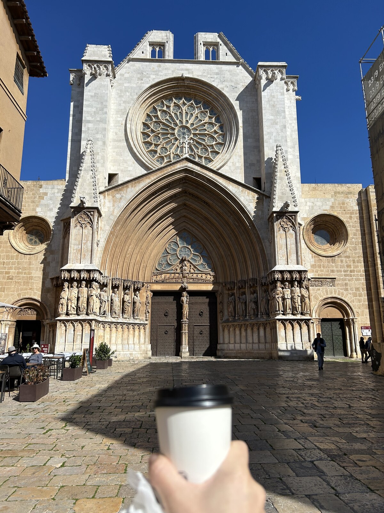
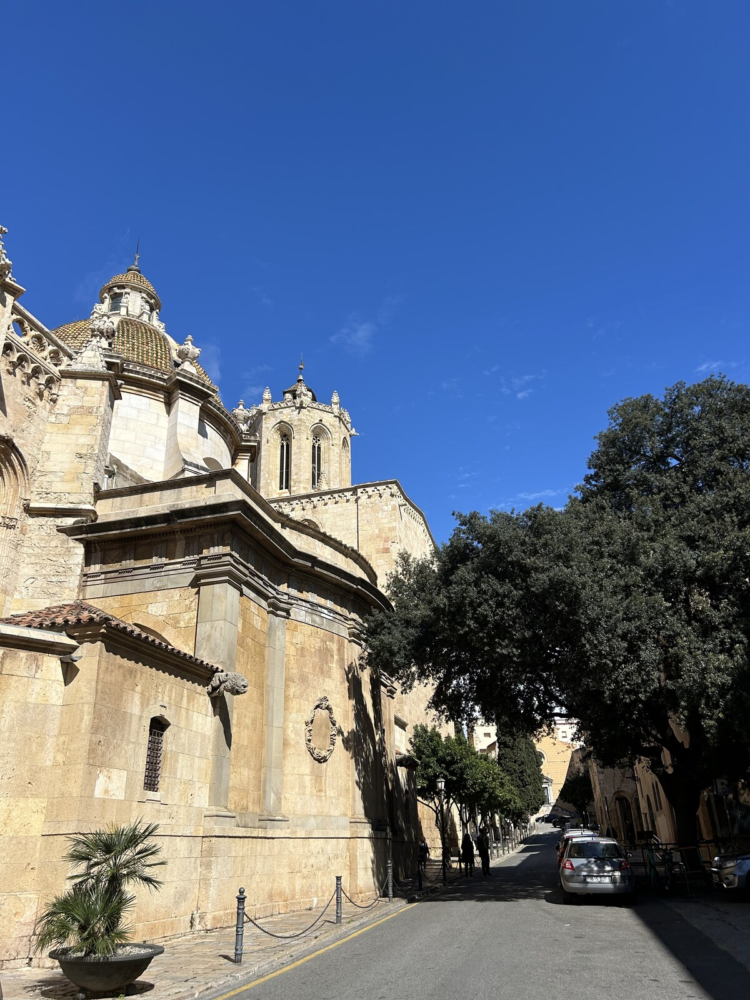
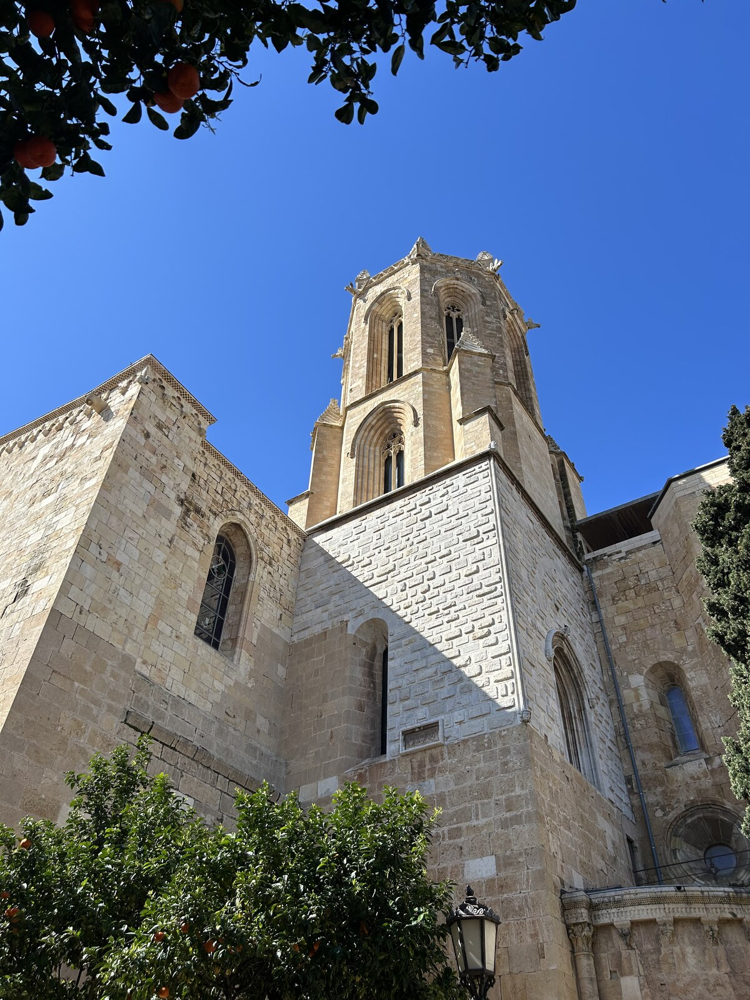
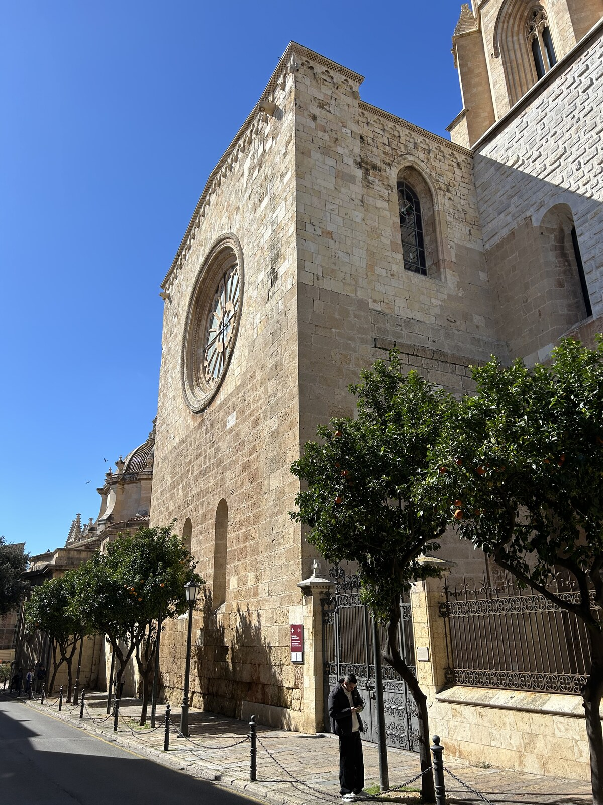
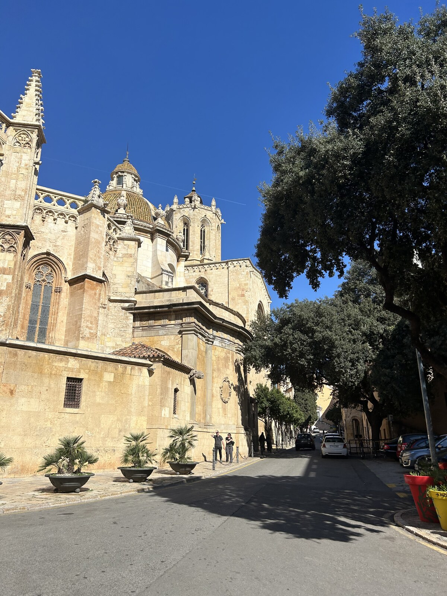
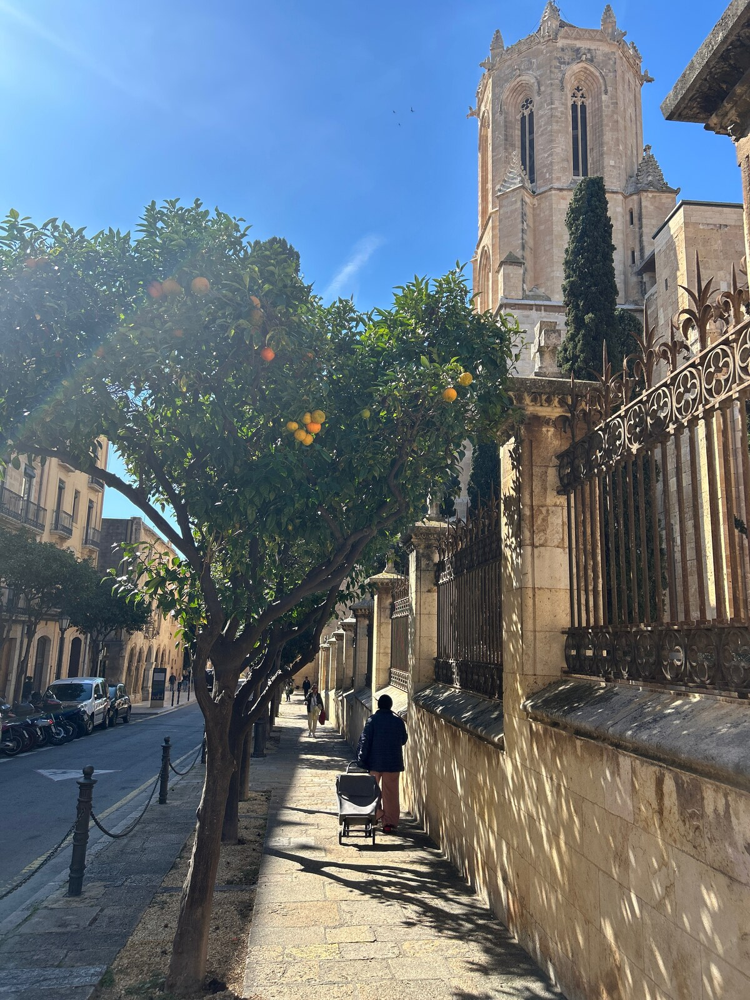
Римские стены (Passeig Arqueològic)Римські мури (Passeig Arqueològic)Roman Walls (Passeig Arqueològic)
Открыть в Google КартахВідкрити в Google КартахOpen in Google Maps
Самые древние сохранившиеся римские стены за пределами Италии. Некоторые их участки были построены более 2200 лет назад и позволяют представить, как выглядел древний город Таррако.
Найдавніші збережені римські мури за межами Італії. Деякі їхні ділянки було зведено понад 2200 років тому, і вони дають змогу уявити, яким було давнє місто Таррако.
The oldest surviving Roman walls outside of Italy. Some sections were built more than 2,200 years ago and let you imagine what the ancient city of Tarraco once looked like.
Балкон Средиземноморья (Balcó del Mediterrani)Балкон Середземномор’я (Balcó del Mediterrani)Balcony of the Mediterranean (Balcó del Mediterrani)
Открыть в Google КартахВідкрити в Google КартахOpen in Google Maps
Знаменитая смотровая площадка на высоте около 40 метров над морем. Отсюда открывается лучший панорамный вид на побережье, порт и пляжи Таррагоны. По местной традиции стоит дотронуться до металлического ограждения — считается, что это приносит удачу.
Знаменитий оглядовий майданчик на висоті близько 40 метрів над морем. Звідси відкривається найкращий панорамний краєвид на узбережжя, порт і пляжі Таррагони. За місцевою традицією варто доторкнутися до металевої огорожі — вважається, що це приносить удачу.
A famous viewpoint about 40 meters above the sea. From here you get the best panoramic view of the coastline, the port, and the beaches of Tarragona. Local tradition says you should touch the metal railing — it's believed to bring good luck.
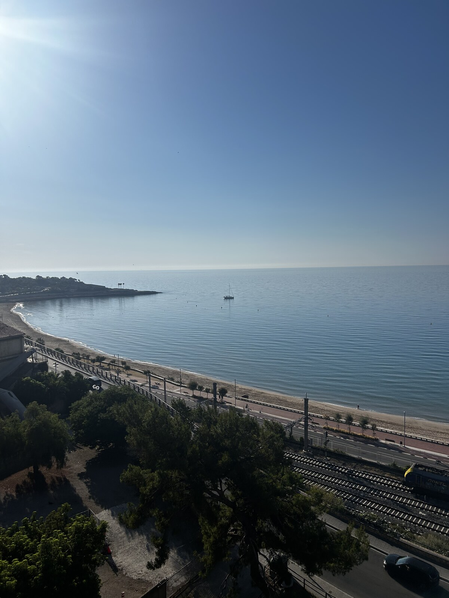
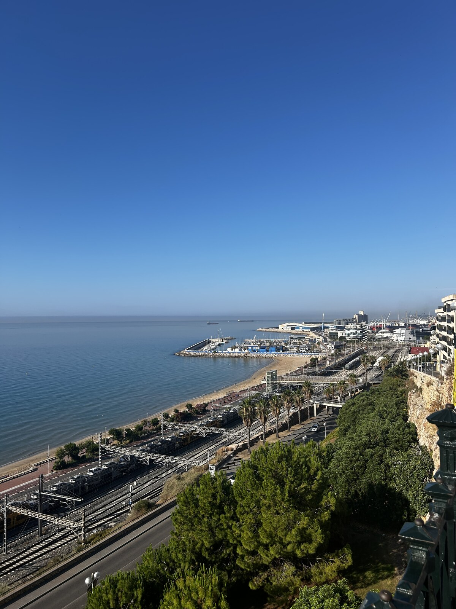
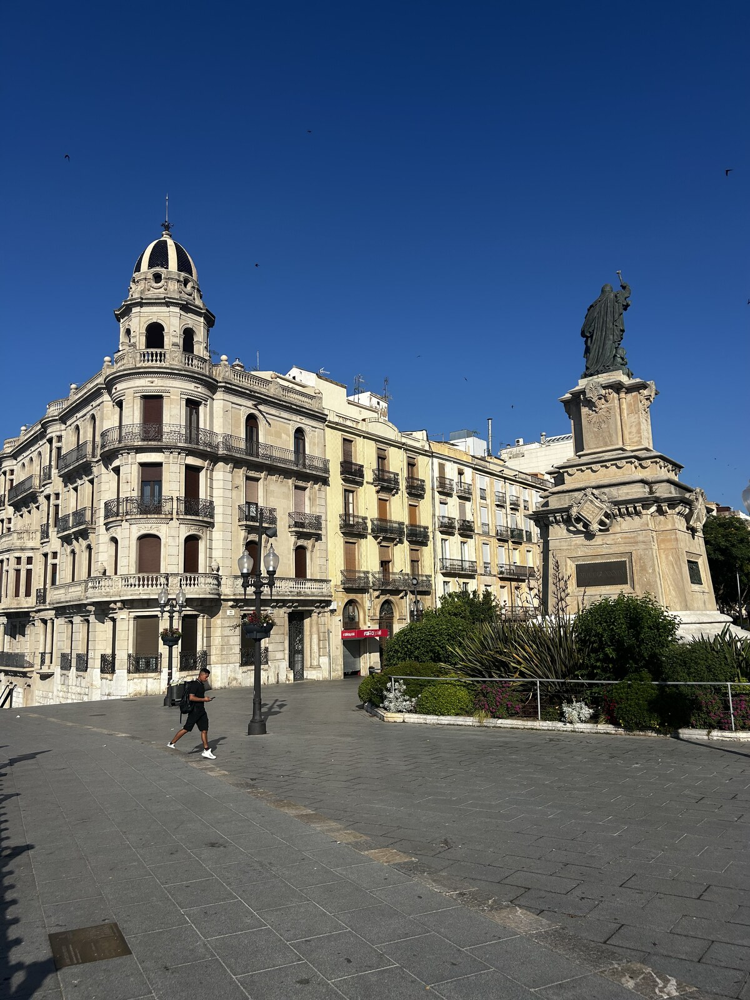
Район Эль-СерральоРайон Ель-СерральоEl Serrallo district
Открыть в Google КартахВідкрити в Google КартахOpen in Google Maps
Старинный рыбацкий квартал рядом с портом. Здесь находится большинство лучших рыбных ресторанов города, а вечером приятно прогуляться вдоль яхт и набережной.
Старовинний рибальський квартал біля порту. Тут зосереджена більшість найкращих рибних ресторанів міста, а ввечері приємно прогулятися вздовж яхт і набережної.
An old fishing quarter near the port. Most of the city's best seafood restaurants are here, and in the evening it's pleasant to stroll along the yachts and the waterfront.
ПляжиПляжіBeaches
Несмотря на богатую историю, в Таррагоне есть отличные песчаные пляжи. Самые популярные — Playa del Miracle (Google Карты), расположенный рядом с центром, и Playa de l'Arrabassada (Google Карты), более просторный и спокойный, с чистой водой и развитой инфраструктурой.
Попри багату історію, у Таррагоні є чудові піщані пляжі. Найпопулярніші — Playa del Miracle (Google Карти), розташований поруч із центром, і Playa de l'Arrabassada (Google Карти) — просторіший і спокійніший, з чистою водою та розвиненою інфраструктурою.
Despite its rich history, Tarragona has excellent sandy beaches. The most popular are Playa del Miracle (Google Maps), close to the center, and Playa de l'Arrabassada (Google Maps), a more spacious and calm beach with clear water and well-developed facilities.
Центральный рынокЦентральний ринокCentral Market
Открыть в Google КартахВідкрити в Google КартахOpen in Google Maps
Исторический крытый рынок, где можно купить свежие морепродукты, хамон, сыры, фрукты и другие местные продукты. Хорошее место, чтобы познакомиться с каталонской гастрономией и купить что-нибудь с собой.
Історичний критий ринок, де можна купити свіжі морепродукти, хамон, сири, фрукти та інші місцеві продукти. Чудове місце, щоб познайомитися з каталонською гастрономією й купити щось із собою.
A historic covered market where you can buy fresh seafood, jamón, cheeses, fruit, and other local products. A good place to get to know Catalan cuisine and pick something up to take with you.
Маршрут по ТаррагонеМаршрут ТаррагоноюA walking route around Tarragona
Начало: Центральный рынок (Mercat Central)Початок: Центральний ринок (Mercat Central)Start: Central Market (Mercat Central)
Открыть в Google КартахВідкрити в Google КартахOpen in Google Maps
Начните прогулку с Центрального рынка — здесь можно выпить кофе, позавтракать или купить свежие фрукты и местные продукты.
Почніть прогулянку з Центрального ринку — тут можна випити кави, поснідати або купити свіжі фрукти й місцеві продукти.
Start your walk at the Central Market — here you can have a coffee, breakfast, or buy fresh fruit and local products.
➡️ 1. Римский форум (Fòrum de la Colònia)Римський форум (Fòrum de la Colònia)Roman Forum (Fòrum de la Colònia)
Открыть в Google КартахВідкрити в Google КартахOpen in Google Maps
От рынка всего несколько минут пешком до руин римского форума. Именно здесь более двух тысяч лет назад находился административный и торговый центр древнего города Таррако.
Від ринку лише кілька хвилин пішки до руїн римського форуму. Саме тут понад дві тисячі років тому розташовувався адміністративний і торговельний центр давнього міста Таррако.
Just a few minutes' walk from the market are the ruins of the Roman forum. More than two thousand years ago, this was the administrative and commercial center of the ancient city of Tarraco.
➡️ 2. Балкон СредиземноморьяБалкон Середземномор’яBalcony of the Mediterranean
Открыть в Google КартахВідкрити в Google КартахOpen in Google Maps
Пройдите к самой известной смотровой площадке Таррагоны. Отсюда открывается панорамный вид на море, порт, пляжи и римский амфитеатр. По местной традиции стоит прикоснуться к металлическому ограждению — говорят, это приносит удачу.
Пройдіть до найвідомішого оглядового майданчика Таррагони. Звідси відкривається панорамний краєвид на море, порт, пляжі та римський амфітеатр. За місцевою традицією варто доторкнутися до металевої огорожі — кажуть, це приносить удачу.
Head to Tarragona's most famous viewpoint. From here you get a panoramic view of the sea, the port, the beaches, and the Roman amphitheatre. Local tradition says to touch the metal railing — it's said to bring good luck.
➡️ 3. Римский циркРимський циркRoman Circus
Открыть в Google КартахВідкрити в Google КартахOpen in Google Maps
Далее отправляйтесь к римскому цирку — одному из лучших сохранившихся в мире. При желании можно зайти внутрь и пройти по древним подземным галереям.
Далі вирушайте до римського цирку — одного з найкраще збережених у світі. За бажання можна зайти всередину й пройтися давніми підземними галереями.
Next, head to the Roman circus — one of the best-preserved in the world. If you like, you can go inside and walk through the ancient underground galleries.
➡️ 4. Римский амфитеатрРимський амфітеатрRoman Amphitheatre
Открыть в Google КартахВідкрити в Google КартахOpen in Google Maps
От цирка по лестницам можно спуститься к главному символу Таррагоны — римскому амфитеатру, расположенному прямо у моря. Это одно из самых красивых мест города.
Від цирку сходами можна спуститися до головного символу Таррагони — римського амфітеатру, що розташований просто біля моря. Це одне з найгарніших місць міста.
From the circus you can walk down the stairs to Tarragona's main symbol — the Roman amphitheatre, right by the sea. It's one of the most beautiful spots in the city.
➡️ 5. Пляж El MiracleПляж El MiracleEl Miracle Beach
Открыть в Google КартахВідкрити в Google КартахOpen in Google Maps
После осмотра амфитеатра спуститесь к пляжу El Miracle. Можно искупаться, если позволяет погода, или просто прогуляться вдоль моря.
Після огляду амфітеатру спустіться до пляжу El Miracle. Можна скупатися, якщо дозволяє погода, або просто прогулятися вздовж моря.
After visiting the amphitheatre, head down to El Miracle beach. You can go for a swim if the weather allows, or simply walk along the sea.
➡️ 6. Марина ТаррагоныМарина ТаррагониTarragona Marina
Открыть в Google КартахВідкрити в Google КартахOpen in Google Maps
Продолжайте прогулку по набережной до городской марины. Здесь часто можно увидеть впечатляющие яхты. Летом их бывает особенно много. Иногда заходят яхты, принадлежащие известным предпринимателям и представителям ближневосточных королевских семей. В последние годы внимание также привлекает конфискованная яхта российского олигарха, находящаяся в порту.
Продовжуйте прогулянку набережною до міської марини. Тут часто можна побачити вражаючі яхти, а влітку їх особливо багато. Іноді заходять яхти відомих підприємців і представників близькосхідних королівських родин. Останніми роками увагу привертає також конфіскована яхта російського олігарха, що стоїть у порту.
Continue your walk along the promenade to the city marina. You'll often see impressive yachts here, especially in summer. Sometimes yachts belonging to well-known entrepreneurs and members of Middle Eastern royal families dock here. In recent years, attention has also been drawn to a confiscated yacht belonging to a Russian oligarch that has been kept in the port.
Марина Таррагоны — одна из самых известных стоянок суперъяхт в западном Средиземноморье. Здесь регулярно зимуют или проходят техническое обслуживание яхты, принадлежащие одним из самых богатых людей мира. Среди них — яхты эмира Катара и бывшего эмира Катара, правителя Бахрейна, основателя Dyson Джеймса Дайсона, главы группы LVMH Бернара Арно, режиссёра Стивена Спилберга, а также индийского миллиардера Лакшми Миттала. Иногда здесь можно увидеть и другие мегаяхты, принадлежащие мировым миллиардерам и членам королевских семей Ближнего Востока.
Марина Таррагони — одна з найвідоміших стоянок суперяхт у західному Середземномор’ї. Тут регулярно зимують або проходять технічне обслуговування яхти, що належать одним із найбагатших людей світу. Серед них — яхти еміра Катару й колишнього еміра Катару, правителя Бахрейну, засновника Dyson Джеймса Дайсона, очільника групи LVMH Бернара Арно, режисера Стівена Спілберга, а також індійського мільярдера Лакшмі Міттала. Іноді тут можна побачити й інші мегаяхти, що належать світовим мільярдерам і членам королівських родин Близького Сходу.
Tarragona's marina is one of the best-known superyacht berths in the western Mediterranean. Yachts belonging to some of the wealthiest people in the world regularly winter here or undergo maintenance. Among them are yachts belonging to the Emir of Qatar and the former Emir of Qatar, the ruler of Bahrain, Dyson founder James Dyson, LVMH chairman Bernard Arnault, director Steven Spielberg, and Indian billionaire Lakshmi Mittal. Other megayachts belonging to global billionaires and members of Middle Eastern royal families can sometimes be spotted here as well.
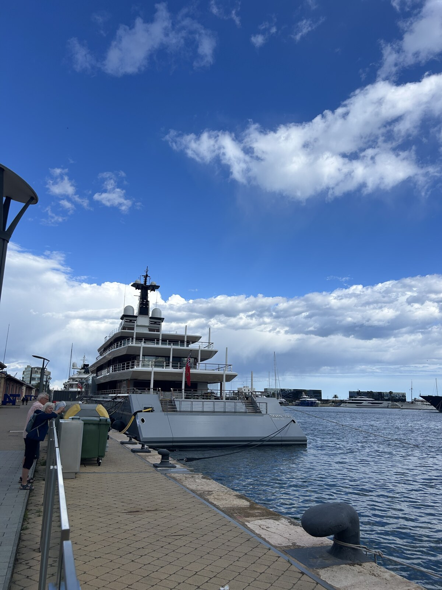
➡️ 7. Рыбацкий квартал El SerralloРибальський квартал El SerralloEl Serrallo fishing quarter
Открыть в Google КартахВідкрити в Google КартахOpen in Google Maps
Завершите прогулку в старом рыбацком районе Эль-Серральо. Здесь сохранилась атмосфера старого портового квартала с разноцветными домами и уютной набережной.
Завершіть прогулянку в старому рибальському районі Ель-Серральо. Тут збереглася атмосфера давнього портового кварталу з різнобарвними будиночками й затишною набережною.
End your walk in the old fishing district of El Serrallo. It has retained the atmosphere of an old port quarter, with colorful houses and a cozy waterfront.
Это лучшее место в городе для ужина из свежих морепродуктов. Даже если не планируете полноценный ужин, приятно остановиться здесь на бокал вина или коктейль, наблюдая за жизнью порта.
Це найкраще місце в місті для вечері зі свіжих морепродуктів. Навіть якщо не плануєте повноцінну вечерю, приємно зупинитися тут на келих вина чи коктейль, спостерігаючи за життям порту.
This is the best place in the city for a fresh seafood dinner. Even if you're not planning a full dinner, it's nice to stop here for a glass of wine or a cocktail while watching port life go by.
Пляжи ТаррагоныПляжі ТаррагониBeaches of Tarragona
Побережье Таррагоны считается одним из лучших на Коста-Дораде. Практически все пляжи — песчаные, с пологим входом в море и чистой водой. До многих из них можно добраться пешком из центра города.
Узбережжя Таррагони вважається одним із найкращих на Коста-Дораді. Майже всі пляжі піщані, з пологим входом у море та чистою водою. До багатьох із них можна дійти пішки з центру міста.
The Tarragona coastline is considered one of the best on the Costa Daurada. Almost all the beaches are sandy, with a gentle slope into the sea and clean water. Many of them can be reached on foot from the city center.
🏖️ El Miracle
Открыть в Google КартахВідкрити в Google КартахOpen in Google Maps
Самый городской пляж Таррагоны. Находится прямо у центра, рядом с римским амфитеатром. До него легко дойти пешком за 10–15 минут от Балкона Средиземноморья.
Найбільш міський пляж Таррагони. Розташований просто біля центру, поруч із римським амфітеатром. До нього легко дійти пішки за 10–15 хвилин від Балкона Середземномор’я.
The most urban beach in Tarragona. Located right by the center, next to the Roman amphitheatre. It's an easy 10–15 minute walk from the Balcony of the Mediterranean.
🏖️ L'Arrabassada
Открыть в Google КартахВідкрити в Google КартахOpen in Google Maps
Один из лучших городских пляжей. Здесь более чистая вода, широкий песчаный берег и развитая инфраструктура. Пляж регулярно получает Голубой флаг за чистоту воды, безопасность и качество сервиса.
Один із найкращих міських пляжів. Тут чистіша вода, широкий піщаний берег і розвинена інфраструктура. Пляж регулярно отримує Блакитний прапор за чистоту води, безпеку та якість сервісу.
One of the best city beaches. It has cleaner water, a wide sandy shore, and well-developed facilities. The beach regularly receives a Blue Flag for water cleanliness, safety, and quality of service.
🏖️ Platja Llarga
Открыть в Google КартахВідкрити в Google КартахOpen in Google Maps
Самый длинный пляж Таррагоны — около 3 км. Здесь меньше людей, много сосен вдоль берега и очень спокойная атмосфера. Отлично подходит для длительных прогулок и отдыха с детьми.
Найдовший пляж Таррагони — близько 3 км. Тут менше людей, уздовж берега багато сосен і дуже спокійна атмосфера. Чудово підходить для довгих прогулянок і відпочинку з дітьми.
The longest beach in Tarragona — about 3 km. There are fewer people here, plenty of pine trees along the shore, and a very calm atmosphere. Great for long walks and for relaxing with children.
🏖️ Cala Fonda (Waikiki)
Открыть в Google КартахВідкрити в Google КартахOpen in Google Maps
Один из самых красивых диких пляжей побережья. Его часто называют просто пляжем Вайкики. До него нужно пройти около 15–20 минут по сосновому лесу, зато здесь нет городской застройки и сохранилась практически нетронутая природа. На части пляжа традиционно отдыхают нудисты, хотя многие приезжают сюда просто ради красивой бухты.
Один із найгарніших диких пляжів узбережжя. Його часто називають просто пляжем Вайкікі. До нього треба пройти близько 15–20 хвилин сосновим лісом, зате тут немає міської забудови і збереглася майже незаймана природа. На частині пляжу традиційно відпочивають нудисти, хоча багато хто приїздить сюди просто заради мальовничої бухти.
One of the most beautiful wild beaches on the coast, often simply called Waikiki beach. You need to walk about 15–20 minutes through a pine forest to reach it, but in return there's no urban development and the nature is largely untouched. Part of the beach is traditionally used by nudists, though many people come here simply for the beautiful cove.
🏖️ Platja de la Mora
Открыть в Google КартахВідкрити в Google КартахOpen in Google Maps
Красивый семейный пляж в районе Ла-Мора, примерно в 10–15 минутах езды от центра Таррагоны. Спокойное море, мелкий песок и уютная атмосфера делают его одним из любимых пляжей местных жителей.
Гарний сімейний пляж у районі Ла-Мора, приблизно за 10–15 хвилин їзди від центру Таррагони. Спокійне море, дрібний пісок і затишна атмосфера роблять його одним з улюблених пляжів місцевих жителів.
A beautiful family beach in the La Mora area, about a 10–15 minute drive from central Tarragona. Calm sea, fine sand, and a cozy atmosphere make it one of the favorite beaches among locals.
🏖️ Cala Jovera
Открыть в Google КартахВідкрити в Google КартахOpen in Google Maps
Небольшая живописная бухта у подножия замка Тамарит. Это, пожалуй, одно из самых красивых мест на всём побережье: золотистый песок, прозрачная вода и средневековый замок, возвышающийся прямо над морем.
Невелика мальовнича бухта біля підніжжя замку Тамаріт. Це, мабуть, одне з найгарніших місць на всьому узбережжі: золотистий пісок, прозора вода й середньовічний замок, що здіймається просто над морем.
A small, picturesque cove at the foot of Tamarit Castle. This is perhaps one of the most beautiful spots on the entire coast: golden sand, clear water, and a medieval castle rising right above the sea.
🏖️ Cala Canyadell (Альтафулья / Торредембарра)(Альтафулья / Торредембарра)(Altafulla / Torredembarra)
Открыть в Google КартахВідкрити в Google КартахOpen in Google Maps
Небольшая живописная бухта между Альтафульей и Торредембаррой. Это один из самых уютных и красивых пляжей побережья: золотистый песок, прозрачная вода, сосны и скалы по бокам бухты. Благодаря небольшому размеру здесь обычно гораздо спокойнее, чем на крупных пляжах. Добраться можно пешком по прибрежной тропе из Альтафульи или Торредембарры.
Невелика мальовнича бухта між Альтафульєю та Торредембаррою. Це один із найзатишніших і найгарніших пляжів узбережжя: золотистий пісок, прозора вода, сосни й скелі обабіч бухти. Завдяки невеликому розміру тут зазвичай набагато спокійніше, ніж на великих пляжах. Дістатися можна пішки прибережною стежкою з Альтафульї або Торредембарри.
A small, picturesque cove between Altafulla and Torredembarra. This is one of the coziest and most beautiful beaches on the coast: golden sand, clear water, pine trees, and rocks framing the cove. Because of its small size, it's usually much quieter here than on the larger beaches. It can be reached on foot along the coastal path from Altafulla or Torredembarra.
🏖️ Platja Llarga (Салоу)(Салоу)(Salou)
Открыть в Google КартахВідкрити в Google КартахOpen in Google Maps
Не путать с Platja Llarga в Таррагоне. Пляж Салоу расположен в районе Кап-Салоу и считается одним из самых красивых пляжей курорта. Он окружён сосновым лесом, находится в стороне от самых шумных туристических зон и обычно менее многолюден, чем центральные пляжи Салоу. Здесь спокойное море и очень приятная природная атмосфера.
Не плутати з Platja Llarga в Таррагоні. Цей пляж Салоу розташований у районі Кап-Салоу і вважається одним із найгарніших пляжів курорту. Він оточений сосновим лісом, розташований осторонь від найгаласливіших туристичних зон і зазвичай менш людний, ніж центральні пляжі Салоу. Тут спокійне море й дуже приємна природна атмосфера.
Not to be confused with Platja Llarga in Tarragona. This Salou beach is located in the Cap Salou area and is considered one of the most beautiful beaches at the resort. It's surrounded by pine forest, away from the busiest tourist zones, and is usually less crowded than Salou's central beaches. It has calm sea and a very pleasant natural setting.
Чем заняться в ТаррагонеЧим зайнятися в ТаррагоніThings to do in Tarragona
Таррагона — город, отлично подходящий для спокойного отдыха. Здесь приятно гулять по старому городу, любоваться римскими памятниками и видами на море, отдыхать на песчаных пляжах, пробовать средиземноморскую кухню в местных ресторанах и ходить по магазинам на центральных улицах и в торговых центрах.
Таррагона — місто, що чудово підходить для спокійного відпочинку. Тут приємно гуляти старим містом, милуватися римськими пам’ятками та краєвидами на море, відпочивати на піщаних пляжах, куштувати середземноморську кухню в місцевих ресторанах і ходити по крамницях на центральних вулицях і в торгових центрах.
Tarragona is a city perfectly suited to a relaxed getaway. It's a pleasure to walk around the old town, admire the Roman monuments and sea views, relax on the sandy beaches, try Mediterranean dishes at local restaurants, and go shopping on the central streets and in the shopping malls.
Если повезёт попасть в город во время одного из фестивалей, впечатления будут ещё ярче. Перед поездкой стоит заглянуть в календарь городских событий — здесь в течение года проходит немало фестивалей и культурных мероприятий.
Якщо пощастить потрапити до міста під час одного з фестивалів, враження будуть ще яскравішими. Перед поїздкою варто зазирнути в календар міських подій — тут упродовж року відбувається чимало фестивалів і культурних заходів.
If you're lucky enough to visit during one of the city's festivals, the experience will be even richer. Before your trip, it's worth checking the city's events calendar — many festivals and cultural events take place here throughout the year.
Самые интересные фестивалиНайцікавіші фестиваліThe most interesting festivals
- Santa Tecla (вторая половина сентября) — главный фестиваль Таррагоны, которому уже более 700 лет. На протяжении двух недель проходят шествия гигантов, выступления живых башен (кастельс), концерты, фейерверки и знаменитые огненные забеги correfoc. Это главное событие года в городе. (tarragona.cat)
- Santa Tecla (друга половина вересня) — головний фестиваль Таррагони, якому вже понад 700 років. Упродовж двох тижнів тут відбуваються ходи велетнів, виступи живих веж (кастельс), концерти, феєрверки та знамениті вогняні забіги correfoc. Це головна подія року в місті. (tarragona.cat)
- Santa Tecla (second half of September) — Tarragona's main festival, already more than 700 years old. Over two weeks there are processions of giants, performances of human towers (castells), concerts, fireworks, and the famous correfoc fire runs. This is the biggest event of the year in the city. (tarragona.cat)
- Carnaval (февраль–март, даты зависят от Пасхи) — красочный карнавал с костюмированными шествиями, музыкой и праздничной атмосферой. Один из самых весёлых праздников Каталонии.
- Carnaval (лютий–березень, дати залежать від Великодня) — барвистий карнавал із костюмованими ходами, музикою та святковою атмосферою. Одне з найвеселіших свят Каталонії.
- Carnaval (February–March, dates depend on Easter) — a colorful carnival with costumed parades, music, and a festive atmosphere. One of the most fun celebrations in Catalonia.
- Tarraco Viva (май) — уникальный международный фестиваль римской истории. В городе проходят реконструкции гладиаторских боёв и римских легионов, лекции, мастер-классы и театральные представления, которые ярко возрождают древний Таррако. (tarracoviva.com)
- Tarraco Viva (травень) — унікальний міжнародний фестиваль римської історії. У місті відбуваються реконструкції гладіаторських боїв і римських легіонів, лекції, майстер-класи та театральні вистави, які яскраво відроджують давнє Тарако. (tarracoviva.com)
- Tarraco Viva (May) — a unique international festival of Roman history. The city hosts reenactments of gladiator fights and Roman legions, lectures, workshops, and theatrical performances that bring ancient Tarraco vividly back to life. (tarracoviva.com)
Что посмотреть рядом с ТаррагонойЩо подивитися поблизу ТаррагониWhat to see near Tarragona
Реус (10–15 минут)Реус (10–15 хвилин)Reus (10–15 minutes)
Открыть в Google КартахВідкрити в Google КартахOpen in Google Maps
Реус — родной город Антони Гауди, одного из самых известных архитекторов мира. Хотя сам Гауди почти ничего здесь не построил, город бережно хранит память о его жизни и творчестве.
Реус — рідне місто Антоні Гауді, одного з найвідоміших архітекторів світу. Хоча сам Гауді майже нічого тут не збудував, місто дбайливо береже пам’ять про його життя і творчість.
Reus is the birthplace of Antoni Gaudí, one of the world's most famous architects. Although Gaudí himself built almost nothing here, the city is dedicated to his life and work.
Стоит увидетьВарто побачитиWorth seeing
- Gaudí Centre (Google Карты) — современный интерактивный музей, посвящённый жизни и архитектуре Гауди.
- Gaudí Centre (Google Карти) — сучасний інтерактивний музей, присвячений життю та архітектурі Гауді.
- Gaudí Centre (Google Maps) — a modern interactive museum dedicated to Gaudí's life and architecture.
- Casa Navàs (Google Карты) — один из наиболее хорошо сохранившихся домов в стиле модерн в Европе.
- Casa Navàs (Google Карти) — один із найкраще збережених будинків у стилі модерн у Європі.
- Casa Navàs (Google Maps) — one of the best-preserved Art Nouveau houses in Europe.
- Исторический центр с красивыми площадями и множеством кафе.
- Історичний центр із гарними площами та безліччю кав’ярень.
- The historic center, with beautiful squares and numerous cafés.
- Музей вермута (Museu del Vermut) (Google Карты) — необычный музей, где можно узнать историю знаменитого каталонского напитка и попробовать разные виды вермута.
- Музей вермуту (Museu del Vermut) (Google Карти) — незвичайний музей, де можна дізнатися історію знаменитого каталонського напою та скуштувати різні види вермуту.
- Vermouth Museum (Museu del Vermut) (Google Maps) — an unusual museum where you can learn the history of the famous Catalan drink and try different types of vermouth.
- Церковь Prioral de Sant Pere (Google Карты), ставшая символом города.
- Церква Prioral de Sant Pere (Google Карти), що стала символом міста.
- Prioral de Sant Pere Church (Google Maps), which has become a symbol of the city.
Салоу (15 минут)Салоу (15 хвилин)Salou (15 minutes)
Открыть в Google КартахВідкрити в Google КартахOpen in Google Maps
Самый известный курорт Коста-Дорады с широкими песчаными пляжами, длинной пальмовой набережной и большим выбором отелей.
Найвідоміший курорт Коста-Доради з широкими піщаними пляжами, довгою пальмовою набережною та великим вибором готелів.
The best-known resort on the Costa Daurada, with wide sandy beaches, a long palm-lined promenade, and a wide choice of hotels.
Главная причина приехать сюда — PortAventura World, один из крупнейших парков развлечений Европы. В комплекс входят:
Головна причина приїхати сюди — PortAventura World, один із найбільших парків розваг Європи. До комплексу входять:
The main reason to come here is PortAventura World, one of the largest amusement parks in Europe. The complex includes:
- PortAventura Park (Google Карты) — тематический парк с аттракционами для всей семьи.
- PortAventura Park (Google Карти) — тематичний парк з атракціонами для всієї родини.
- PortAventura Park (Google Maps) — a theme park with rides for the whole family.
- Ferrari Land (Google Карты) — парк в стиле Ferrari с одной из самых высоких и быстрых американских горок в Европе.
- Ferrari Land (Google Карти) — парк у стилі Ferrari з одними з найвищих і найшвидших американських гірок у Європі.
- Ferrari Land (Google Maps) — a Ferrari-themed park with one of the tallest and fastest roller coasters in Europe.
- Caribe Aquatic Park (Google Карты) — большой аквапарк с горками и бассейнами.
- Caribe Aquatic Park (Google Карти) — великий аквапарк із гірками та басейнами.
- Caribe Aquatic Park (Google Maps) — a large water park with slides and pools.
Ла-Пинеда (10 минут)Ла-Пінеда (10 хвилин)La Pineda (10 minutes)
Открыть в Google КартахВідкрити в Google КартахOpen in Google Maps
Спокойный курорт с широким песчаным пляжем, отлично подходящий для семейного отдыха с детьми.
Спокійний курорт із широким піщаним пляжем, що чудово підходить для сімейного відпочинку з дітьми.
A quiet resort with a wide sandy beach, perfect for a family holiday with children.
Главные местаГоловні місцяMain spots
- Aquopolis Costa Dorada (Google Карты) — один из крупнейших аквапарков региона.
- Aquopolis Costa Dorada (Google Карти) — один із найбільших аквапарків регіону.
- Aquopolis Costa Dorada (Google Maps) — one of the largest water parks in the region.
- Aquum Spa & Wellness (Google Карты) — большой современный спа-комплекс с саунами, банями, бассейнами и зонами отдыха.
- Aquum Spa & Wellness (Google Карти) — великий сучасний спа-комплекс із саунами, лазнями, басейнами та зонами відпочинку.
- Aquum Spa & Wellness (Google Maps) — a large modern spa complex with saunas, steam baths, pools, and relaxation areas.
Альтафулья (15–20 минут)Альтафулья (15–20 хвилин)Altafulla (15–20 minutes)
Открыть в Google КартахВідкрити в Google КартахOpen in Google Maps
Один из самых уютных городков побережья. В отличие от оживлённых Салоу и Ла-Пинеды, здесь царит спокойная атмосфера: узкие улочки, белые дома, небольшие площади и рестораны с видом на море.
Одне з найзатишніших містечок узбережжя. На відміну від жвавих Салоу та Ла-Пінеди, тут панує спокійна атмосфера: вузькі вулички, білі будинки, невеликі площі й ресторани з видом на море.
One of the coziest towns on the coast. Unlike the lively Salou and La Pineda, a calm atmosphere reigns here: narrow streets, white houses, small squares, and restaurants with sea views.
Здесь приятно:
Тут приємно:
It's a nice place to:
- погулять по историческому центру;
- погуляти історичним центром;
- walk around the historic center;
- отдохнуть на спокойном песчаном пляже;
- відпочити на спокійному піщаному пляжі;
- relax on a calm sandy beach;
- поужинать в одном из ресторанов у моря;
- повечеряти в одному з ресторанів біля моря;
- have dinner at one of the seaside restaurants;
- подняться к средневековому замку Castell d'Altafulla.
- піднятися до середньовічного замку Castell d'Altafulla.
- climb up to the medieval Castell d'Altafulla.
Неподалёку находится один из самых красивых замков побережья — замок Тамарит (Castell de Tamarit) (Google Карты), стоящий прямо над морем. Это одно из самых фотографируемых мест на Коста-Дораде.
Неподалік розташований один із найгарніших замків узбережжя — замок Тамаріт (Castell de Tamarit) (Google Карти), що стоїть просто над морем. Це одне з найбільш фотографованих місць на Коста-Дораді.
Nearby is one of the most beautiful castles on the coast — Tamarit Castle (Castell de Tamarit) (Google Maps), standing right above the sea. It's one of the most photographed spots on the Costa Daurada.
🌾 Дельта реки Эбро (Delta de l'Ebre)Дельта річки Ебро (Delta de l'Ebre)Ebro River Delta (Delta de l'Ebre)
Открыть в Google КартахВідкрити в Google КартахOpen in Google Maps
Если есть свободный день, стоит отправиться к дельте реки Эбро — примерно час езды от Таррагоны. Эбро — самая длинная река Испании, а её дельта — один из крупнейших природных парков Каталонии. Здесь река впадает в Средиземное море, образуя огромные лагуны, рисовые поля и песчаные косы.
Якщо маєте вільний день, варто вирушити до дельти річки Ебро — це приблизно година їзди від Таррагони. Ебро — найдовша річка Іспанії, а її дельта — один із найбільших природних парків Каталонії. Тут річка впадає в Середземне море, утворюючи величезні лагуни, рисові поля та піщані коси.
If you have a free day, it's worth heading to the Ebro river delta, about an hour's drive from Tarragona. The Ebro is Spain's longest river, and its delta is one of the largest nature parks in Catalonia. Here the river flows into the Mediterranean, forming huge lagoons, rice fields, and sandbars.
Главное богатство дельты — природа и гастрономия. Здесь выращивают знаменитый рис Arroz del Delta del Ebre, разводят устриц и мидий, готовят блюда из местного угря. Обязательно стоит попробовать рис с морепродуктами или рис с голубым крабом (arroz con cangrejo azul) — одно из фирменных блюд региона.
Головне багатство дельти — природа й гастрономія. Тут вирощують знаменитий рис Arroz del Delta del Ebre, розводять устриць і мідій, готують страви з місцевого вугра. Обов’язково скуштуйте рис із морепродуктами або рис із блакитним крабом (arroz con cangrejo azul) — одну з фірмових страв регіону.
The delta's main riches are its nature and its cuisine. Here they grow the famous Arroz del Delta del Ebre rice, farm oysters and mussels, and cook dishes with local eel. Be sure to try rice with seafood or rice with blue crab (arroz con cangrejo azul) — one of the region's signature dishes.
🦩 Фламинго здесь можно увидеть практически круглый год, но самые крупные колонии и лучшие шансы их встретить — с марта по июль, в период гнездования. Осень и зима тоже хороши для наблюдения за птицами, когда в дельту прилетает множество перелётных видов.
🦩 Фламінго тут можна побачити практично цілий рік, але найбільші колонії й найкращі шанси їх зустріти — з березня по липень, у період гніздування. Осінь і зима теж чудово підходять для спостереження за птахами, коли до дельти прилітає безліч перелітних видів.
🦩 Flamingos can be spotted here almost year-round, but the largest colonies and best chances of seeing them are from March to July, during the nesting season. Autumn and winter are also great for birdwatching, when many migratory species arrive in the delta.
Ещё стоит увидетьЩо ще варто побачитиOther things worth seeing
- Римский акведук Les Ferreres (Pont del Diable) (Google Карты) — всего в 4 км от центра Таррагоны. На машине это около 10–15 минут, а при желании туда можно даже дойти пешком примерно за 45–50 минут. Отличная короткая вылазка или прогулка на полдня.
- Римський акведук Les Ferreres (Pont del Diable) (Google Карти) — лише за 4 км від центру Таррагони. Автівкою це близько 10–15 хвилин, а за бажання туди можна навіть дійти пішки приблизно за 45–50 хвилин. Чудова коротка вилазка або прогулянка на пів дня.
- Les Ferreres Roman Aqueduct (Pont del Diable) (Google Maps) — just 4 km from central Tarragona. By car it's about a 10–15 minute drive, and if you'd like, you can even walk there in about 45–50 minutes. A great short trip or a half-day walk.
- Сиурана (Google Карты) — это уже полноценная экскурсия. Горная деревня находится примерно в 50 км от Таррагоны, около часа езды. Сюда едут ради потрясающих панорам, средневековых улочек, пеших маршрутов и скал, которые считаются одним из лучших мест для скалолазания в Европе.
- Сіурана (Google Карти) — це вже повноцінна екскурсія. Гірське село розташоване приблизно за 50 км від Таррагони, близько години їзди. Сюди їдуть заради приголомшливих панорам, середньовічних вуличок, пішохідних маршрутів і скель, які вважаються одним із найкращих місць для скелелазіння в Європі.
- Siurana (Google Maps) — already a full excursion. This mountain village is about 50 km from Tarragona, around an hour's drive. People come here for the breathtaking panoramas, medieval streets, hiking trails, and cliffs considered one of the best climbing spots in Europe.
🍽️ Гастрономия: что попробовать🍽️ Гастрономія: що скуштувати🍽️ Food: what to try
Что попробовать на завтракЩо скуштувати на сніданокBreakfast
Испанцы завтракают достаточно просто, но вкусно. Если хочется прочувствовать местную кухню, лучше отказаться от привычного европейского завтрака и попробовать то, что едят сами местные жители.
Іспанці снідають досить просто, але смачно. Якщо хочеться відчути місцеву кухню, краще відмовитися від звичного європейського сніданку й спробувати те, що їдять самі місцеві.
Spaniards eat a fairly simple but delicious breakfast. If you want to experience the local cuisine, skip the usual European breakfast and try what the locals actually eat.
🥪 Бокадильо — главный испанский сэндвичБокадільо — головний іспанський сендвічBocadillo — the main Spanish sandwich
Бокадильо — самый популярный завтрак и перекус в Испании. Готовится на хрустящем багете, который почти всегда натирают свежим помидором (pa amb tomàquet) и сбрызгивают хорошим оливковым маслом. Этот простой способ приготовления хлеба считается одной из визитных карточек каталонской кухни.
Бокадільо — найпопулярніший сніданок і перекус в Іспанії. Його готують на хрусткому багеті, який майже завжди натирають свіжим помідором (pa amb tomàquet) і скроплюють добрячою оливковою олією. Цей простий спосіб приготування хліба вважається однією з візитівок каталонської кухні.
Bocadillo is the most popular breakfast and snack in Spain. It's made on a crusty baguette that's almost always rubbed with fresh tomato (pa amb tomàquet) and drizzled with good extra virgin olive oil. This simple way of preparing bread is considered one of the trademarks of Catalan cuisine.
Самые популярные начинки:
Найпопулярніші начинки:
The most popular fillings:
- 🐖 хамон иберико — обязательно попробуйте;
- 🐖 хамон іберіко — обов’язково скуштуйте;
- 🐖 Jamón Ibérico — be sure to try this one;
- 🥓 хамон серрано;
- 🥓 хамон серрано;
- 🥓 Jamón Serrano;
- 🧀 сыр;
- 🧀 сир;
- 🧀 cheese;
- 🥚 испанский картофельный тортилья;
- 🥚 іспанська картопляна тортилья;
- 🥚 Spanish potato tortilla;
- 🐟 тунец с помидором;
- 🐟 тунець із помідором;
- 🐟 tuna with tomato;
- 🌭 каталонская колбаса fuet или longaniza.
- 🌭 каталонська ковбаса fuet або longaniza.
- 🌭 Catalan fuet or longaniza sausage.
Если пробовать только один вид бокадильо — берите с хамоном иберико. Это один из главных гастрономических символов Испании.
Якщо куштувати лише один вид бокадільо — беріть із хамоном іберіко. Це один із головних гастрономічних символів Іспанії.
If you're only going to try one bocadillo, go for Jamón Ibérico. It's one of the main gastronomic symbols of Spain.
🥔 Tortilla de PatatasTortilla de PatatasTortilla de Patatas
Ещё один классический испанский завтрак — тортилья. Несмотря на название, это не мексиканская лепёшка, а плотный омлет из картофеля, яиц и иногда лука.
Ще один класичний іспанський сніданок — тортилья. Попри назву, це не мексиканський коржик, а щільний омлет із картоплі, яєць і часом цибулі.
Another classic Spanish breakfast — tortilla. Despite the name, it's not a Mexican flatbread but a thick omelet made of potatoes, eggs, and sometimes onion.
Едят как самостоятельно, так и внутри бокадильо. Это очень популярно у местных и делает завтрак сытным.
Її їдять як окрему страву, так і в бокадільо. Це дуже популярно серед місцевих і робить сніданок ситним.
It's eaten both on its own and inside a bocadillo. This is very popular among locals and makes a hearty breakfast.
🥐 Свежая выпечкаСвіжа випічкаFresh pastries
Во многих кафе местные завтракают круассаном или шоколадной булочкой (pain au chocolat) с чашкой кофе. Если хочется сладкого завтрака, обязательно загляните в одну из местных пекарен — в Таррагоне очень сильны традиции ремесленной выпечки.
У багатьох кафе місцеві снідають круасаном або шоколадною булочкою (pain au chocolat) з чашкою кави. Якщо хочеться солодкого сніданку, обов’язково зазирніть до однієї з місцевих пекарень — у Таррагоні дуже сильні традиції ремісничої випічки.
In many cafés, locals have breakfast with a croissant or pain au chocolat and a cup of coffee. If you're after a sweet breakfast, be sure to stop by one of the local bakeries — Tarragona has very strong artisan baking traditions.
🫓 Что такое кока?Що таке кока?What is coca?
Кока — одно из самых традиционных блюд Каталонии. Это открытая лепёшка из тонкого теста, которая может быть как солёной, так и сладкой.
Кока — одна з найтрадиційніших страв Каталонії. Це відкритий корж із тонкого тіста, який може бути як солоним, так і солодким.
Coca is one of the most traditional dishes in Catalonia. It's an open flatbread made of thin dough that can be either savory or sweet.
Солёные варианты — нечто среднее между фокаччей и очень тонкой пиццей. Их готовят с жареными овощами, грибами, луком, анчоусами, сыром или колбасой.
Солоні варіанти — щось середнє між фокачею і дуже тонкою піцою. Їх готують зі смаженими овочами, грибами, цибулею, анчоусами, сиром або ковбасою.
The savory versions are somewhere between a focaccia and a very thin pizza. They're made with roasted vegetables, mushrooms, onion, anchovies, cheese, or sausage.
Сладкие коки чаще всего готовят с кремом, фруктами, орехами или цукатами, традиционно — к праздникам.
Солодкі коки найчастіше готують із кремом, фруктами, горіхами або цукатами, традиційно — на свята.
Sweet cocas are most often made with cream, fruit, nuts, or candied fruit, and are traditionally prepared for holidays.
Где попробовать лучший хамон и бокадильоДе скуштувати найкращий хамон і бокадільоWhere to try the best jamón and bocadillo
🥖 Ibericus
Открыть в Google КартахВідкрити в Google КартахOpen in Google Maps
Если хочется попробовать настоящий испанский бокадильо или качественный хамон, обязательно загляните в Ibericus. Это одно из лучших мест в центре Таррагоны, чтобы познакомиться с испанскими деликатесами из свинины.
Якщо хочеться скуштувати справжній іспанський бокадільо чи якісний хамон, обов’язково зазирніть до Ibericus. Це одне з найкращих місць у центрі Таррагони, щоб познайомитися з іспанськими делікатесами зі свинини.
If you want to try a real Spanish bocadillo or quality jamón, be sure to stop by Ibericus. It's one of the best places in central Tarragona to get acquainted with Spanish cured meats.
Здесь большой выбор хамона — от серрано до иберико, а также различные колбасы, сыры и готовые бокадильо.
Тут великий вибір хамону — від серрано до іберіко, а також різні ковбаси, сири й готові бокадільо.
There's a wide selection of jamón here, from Jamón Serrano to Jamón Ibérico, as well as various sausages, cheeses, and ready-made bocadillos.
Стоит попробовать:
Варто скуштувати:
Worth trying:
- 🐖 бокадильо с хамоном иберико — классический испанский выбор;
- 🐖 бокадільо з хамоном іберіко — класичний іспанський вибір;
- 🐖 Bocadillo with Jamón Ibérico — the classic Spanish choice.
- 🥩 тарелку ассорти из иберийских деликатесов;
- 🥩 тарілку асорті з іберійських делікатесів;
- 🥩 A plate of assorted Iberian cured meats.
- 🧀 хамон с местным сыром и бокалом вина.
- 🧀 хамон із місцевим сиром і келихом вина.
- 🧀 Jamón with local cheese and a glass of wine.
Что попробовать: тапасЩо скуштувати: тапасWhat to try: tapas
Испания — страна тапас, небольших блюд, которыми принято делиться с друзьями за бокалом вина или пива. Если вы впервые в Испании, лучше заказать несколько разных блюд и попробовать понемногу от каждого.
Іспанія — країна тапас, невеликих страв, якими заведено ділитися з друзями за келихом вина чи пива. Якщо ви вперше в Іспанії, краще замовити кілька різних страв і скуштувати потроху кожної.
Spain is the country of tapas — small dishes meant to be shared among friends over a glass of wine or beer. If it's your first time in Spain, it's best to order several different dishes and try a little of everything.
🍅 Pa amb tomàquet
Самая известная каталонская закуска. Хрустящий хлеб натирают спелым помидором, сбрызгивают хорошим оливковым маслом и слегка солят. Часто подают с хамоном, сыром или колбасой. Несмотря на простоту, это одно из любимых блюд каталонцев.
Найвідоміша каталонська закуска. Хрусткий хліб натирають стиглим помідором, скроплюють добрячою оливковою олією й трохи солять. Часто подають із хамоном, сиром або ковбасою. Попри простоту, це одна з улюблених страв каталонців.
The most famous Catalan appetizer. Crusty bread is rubbed with ripe tomato, drizzled with good extra virgin olive oil, and lightly salted. It's often served with jamón, cheese, or sausage. Despite its simplicity, it's one of Catalans' favorite dishes.
🐖 Jamón Ibérico
Главный гастрономический символ Испании. Лучше заказывать отдельной тарелкой — тонко нарезанный хамон, вместе с хлебом с помидором. Если есть выбор, берите хамон иберико де бельота.
Головний гастрономічний символ Іспанії. Краще замовляти окремою тарілкою — тонко нарізаний хамон разом із хлібом із помідором. Якщо є вибір, беріть хамон іберіко де бельота.
Spain's main gastronomic symbol. It's best ordered as a separate plate of thinly sliced jamón, eaten together with tomato bread. If you have a choice, go for Jamón Ibérico de Bellota.
🫒 Оливки (Aceitunas)Оливки (Aceitunas)Olives (Aceitunas)
Во многих барах оливки подают как закуску к напиткам. В Испании много сортов — от мягких зелёных до пикантных, маринованных с чесноком, лимоном или специями.
У багатьох барах оливки подають як закуску до напоїв. В Іспанії безліч сортів — від м’яких зелених до пікантних, маринованих із часником, лимоном або спеціями.
Many bars serve olives as a snack with drinks. Spain has many varieties, from mild green ones to piquant ones marinated with garlic, lemon, or spices.
🧆 Croquetas
Небольшие хрустящие крокеты с кремовой начинкой. Самые популярные виды — с хамоном, курицей, грибами, треской или сыром. Почти в каждом ресторане свой фирменный рецепт.
Невеликі хрусткі крокети з кремовою начинкою. Найпопулярніші види — з хамоном, куркою, грибами, тріскою або сиром. Майже в кожному ресторані свій фірмовий рецепт.
Small crispy croquettes with a creamy filling. The most popular varieties are jamón, chicken, mushroom, cod, or cheese. Almost every restaurant has its own signature recipe.
🥔 Patatas Bravas
Одно из самых популярных испанских блюд. Жареный картофель подают с острым соусом брава и часто с чесночным соусом алиоли. Рецепт соуса отличается от заведения к заведению, так что стоит пробовать это блюдо несколько раз.
Одна з найпопулярніших іспанських страв. Смажену картоплю подають із гострим соусом брава й часто з часниковим соусом аліолі. Рецепт соусу різниться від закладу до закладу, тож цю страву варто куштувати не раз.
One of the most popular Spanish dishes. Fried potatoes served with spicy brava sauce and often with garlic alioli. The sauce recipe varies from place to place, so it's worth trying this dish several times.
🐟 Анчоусы (Anchoas)Анчоуси (Anchoas)Anchovies (Anchoas)
Испанские анчоусы сильно отличаются от привычных консервированных. Они более нежные, мясистые и обладают насыщенным вкусом. Часто подаются с оливковым маслом, перцем или на кусочке хлеба.
Іспанські анчоуси дуже відрізняються від звичних консервованих. Вони ніжніші, м’ясистіші та мають насичений смак. Їх часто подають з оливковою олією, перцем або на шматочку хліба.
Spanish anchovies are very different from the usual canned ones. They're more tender, meatier, and have a rich flavor. They're often served with olive oil, pepper, or on a piece of bread.
🍢 Pintxos
Хотя пинчос родом из Страны Басков, они очень популярны и в Таррагоне. Это небольшие закуски на кусочке хлеба, скреплённые шпажкой.
Хоча пінчос родом із Країни Басків, вони дуже популярні й у Таррагоні. Це невеликі закуски на шматочку хліба, скріплені шпажкою.
Although pintxos originated in the Basque Country, they're very popular in Tarragona too. These are small snacks on a piece of bread, held together with a skewer.
Самые вкусные варианты:
Найсмачніші варіанти:
The tastiest varieties:
- с анчоусами;
- з анчоусами;
- with anchovies;
- с хамоном;
- з хамоном;
- with jamón;
- с козьим сыром;
- з козячим сиром;
- with goat cheese;
- с тунцом;
- з тунцем;
- with tuna;
- с жареными овощами.
- зі смаженими овочами.
- with roasted vegetables.
🦑 Calamares a la Romana
Кольца кальмара в лёгком хрустящем кляре. Одна из самых популярных закусок на средиземноморском побережье. Лучше всего есть сразу после приготовления, сбрызнув лимоном.
Кільця кальмара в легкому хрусткому клярі. Одна з найпопулярніших закусок на середземноморському узбережжі. Найсмачніше їсти одразу після приготування, збризнувши лимоном.
Squid rings in a light, crispy batter. One of the most popular appetizers along the Mediterranean coast. Best eaten right after cooking, with a squeeze of lemon.
🦑 Chipirones a la Andaluza
Маленькие кальмарчики, быстро обжаренные в тонкой панировке. Получаются очень нежными и считаются классической закуской к пиву или белому вину.
Маленькі кальмарчики, швидко обсмажені в тонкій панірувці. Виходять дуже ніжними й вважаються класичною закускою до пива чи білого вина.
Small baby squid, quickly fried in a thin coating. They turn out very tender and are considered a classic snack with beer or white wine.
🦐 Gambas al Ajillo
Креветки, приготовленные в оливковом масле с большим количеством чеснока и небольшим количеством чили. Обязательно макайте хлеб в ароматное масло — многие считают его не менее вкусным, чем сами креветки.
Креветки, приготовані в оливковій олії з великою кількістю часнику та дрібкою чилі. Обов’язково вмочайте хліб в ароматну олію — багато хто вважає її не менш смачною, ніж самі креветки.
Prawns cooked in olive oil with plenty of garlic and a bit of chili. Be sure to dip bread in the fragrant oil — many consider it just as tasty as the prawns themselves.
🐙 Pulpo a la Gallega
Отварной осьминог с оливковым маслом, паприкой и крупной солью. Хотя блюдо родом из Галисии, его готовят практически по всей Испании, включая Таррагону.
Відварений восьминіг з оливковою олією, паприкою та крупною сіллю. Хоча страва родом із Галісії, її готують практично по всій Іспанії, зокрема й у Таррагоні.
Boiled octopus with olive oil, paprika, and coarse salt. Although the dish originated in Galicia, it's prepared practically all over Spain, including Tarragona.
🦪 Mejillones al Vapor или a la Marineraабо a la Marineraor a la Marinera
Свежие мидии, приготовленные на пару или в томатно-винном соусе. Благодаря близости моря это одно из выдающихся блюд местных ресторанов.
Свіжі мідії, приготовані на парі або в томатно-винному соусі. Завдяки близькості моря це одна з найкращих страв місцевих ресторанів.
Fresh mussels, either steamed or in a tomato-wine sauce. Thanks to the proximity of the sea, this is one of the standout dishes at local restaurants.
🧀 Quesos Españoles
Тарелка испанских сыров. Попробуйте выдержанный манчего, а если есть местные каталонские сыры — обязательно закажите и их.
Тарілка іспанських сирів. Скуштуйте витриманий манчего, а якщо є місцеві каталонські сири — обов’язково замовте й їх.
A plate of Spanish cheeses. Try an aged Manchego, and if local Catalan cheeses are available, be sure to order those too.
🌶️ Padrón
Маленькие зелёные перчики, обжаренные в оливковом масле с крупной солью. Есть испанская поговорка: «одни острые, другие нет». Большинство мягкие, но время от времени попадается очень острый.
Маленькі зелені перчики, обсмажені в оливковій олії з крупною сіллю. Є іспанське прислів’я: «одні гострі, інші ні». Більшість м’які, але час від часу трапляється дуже гострий.
Small green peppers fried in olive oil with coarse salt. There's a Spanish saying: "some are spicy, some aren't." Most are mild, but every now and then you'll get a very hot one.
Что попробовать на обедЩо скуштувати на обідWhat to try for lunch
Обед — главный приём пищи в Испании. Обычно испанцы обедают между 13:30 и 15:30, и именно в это время рестораны подают свои лучшие блюда.
Обід — головна трапеза в Іспанії. Зазвичай іспанці обідають між 13:30 і 15:30, і саме в цей час ресторани подають свої найкращі страви.
Lunch is the main meal in Spain. Spaniards typically eat lunch between 1:30 and 3:30 pm, and this is when restaurants serve their best dishes.
🥘 Paella
Самое известное испанское блюдо. Хотя паэлья родом из Валенсии, её готовят почти в каждом ресторане на Коста-Дораде.
Найвідоміша іспанська страва. Хоча паелья родом із Валенсії, її готують майже в кожному ресторані на Коста-Дорада.
Spain's most famous dish. Although paella originated in Valencia, it's made in almost every restaurant along the Costa Daurada.
Самые популярные варианты:
Найпопулярніші варіанти:
The most popular versions:
- с морепродуктами (Paella de Marisco);
- з морепродуктами (Paella de Marisco);
- with seafood (Paella de Marisco);
- смешанная — с мясом и морепродуктами (Paella Mixta);
- змішана — з м’ясом і морепродуктами (Paella Mixta);
- mixed — with meat and seafood (Paella Mixta);
- чёрный рис (Arroz Negro) с чернилами каракатицы, обычно подают с чесночным соусом алиоли.
- чорний рис (Arroz Negro) з чорнилом каракатиці, зазвичай його подають із часниковим соусом аліолі.
- black rice (Arroz Negro) with cuttlefish ink, usually served with aioli.
🐟 Свежая рыба и морепродуктыСвіжа риба та морепродуктиFresh fish and seafood
Поскольку Таррагона — портовый город, свежую рыбу здесь обязательно стоит попробовать.
Оскільки Таррагона — портове місто, свіжу рибу тут неодмінно варто скуштувати.
Since Tarragona is a port city, fresh fish is a must-try here.
Чаще всего в меню встречаются:
Найчастіше в меню трапляються:
Most commonly found on menus:
- дорада (Dorada);
- дорада (Dorada);
- Dorada (gilt-head bream);
- морской окунь (Lubina);
- морський окунь (Lubina);
- Lubina (sea bass);
- тюрбо (Rodaballo);
- тюрбо (Rodaballo);
- Rodaballo (turbot);
- морской чёрт (Rape);
- морський чорт (Rape);
- Rape (monkfish);
- хек (Merluza);
- хек (Merluza);
- Merluza (hake);
- красные креветки (Gamba Roja);
- червоні креветки (Gamba Roja);
- red prawns (Gamba Roja);
- каракатица (Sepia);
- каракатиця (Sepia);
- cuttlefish (Sepia);
- осьминог (Pulpo).
- восьминіг (Pulpo).
- octopus (Pulpo).
Если в меню есть Pescado del día («рыба дня») — это обычно самый свежий улов.
Якщо в меню є Pescado del día («риба дня») — це зазвичай найсвіжіший улов.
If Pescado del día ("fish of the day") is on the menu, it's usually the freshest catch.
🍲 Suquet de Peix
Традиционная каталонская рыбная похлёбка со свежей рыбой, картофелем и насыщенным бульоном. Одно из самых аутентичных блюд региона, хотя оно есть не в каждом меню.
Традиційна каталонська рибна юшка зі свіжою рибою, картоплею та насиченим бульйоном. Одна з найавтентичніших страв регіону, хоча вона є не в кожному меню.
A traditional Catalan fish stew made with fresh fish, potatoes, and a rich broth. One of the most authentic dishes in the region, though it's not on every menu.
🍅 Попробуйте гаспачо летомСкуштуйте гаспачо вліткуTry gazpacho in summer
В жару многие рестораны подают гаспачо — холодный томатный суп с овощами и оливковым маслом. Он очень освежает и особенно популярен летом.
У спеку багато ресторанів подають гаспачо — холодний томатний суп з овочами та оливковою олією. Він чудово освіжає і особливо популярний улітку.
In hot weather, many restaurants serve Gazpacho — a cold tomato soup with vegetables and olive oil. It's very refreshing and especially popular in summer.
🧅 Calçots
Зимой и весной обязательно попробуйте кальсотс — особый сладкий каталонский лук, приготовленный на открытом огне и подаваемый с соусом ромеско. В сезон многие рестораны предлагают специальное меню Calçotada с кальсотс, мясом на гриле, вином и десертом. Это одна из самых известных гастрономических традиций Каталонии, а её родиной считается город Валлс, всего в 20 минутах от Таррагоны.
Взимку й навесні обов’язково скуштуйте кальсотс — особливу солодку каталонську цибулю, приготовану на відкритому вогні й подану із соусом ромеско. У сезон багато ресторанів пропонують спеціальне меню Calçotada з кальсотс, м’ясом на грилі, вином і десертом. Це одна з найвідоміших гастрономічних традицій Каталонії, а її батьківщиною вважається місто Вальс, лише за 20 хвилин від Таррагони.
In winter and spring, be sure to try calçots — a special sweet Catalan onion, grilled over an open flame and eaten with romesco sauce. In season, many restaurants offer special Calçotada menus featuring calçots, grilled meat, wine, and dessert. This is one of Catalonia's best-known culinary traditions, and the town of Valls, just 20 minutes from Tarragona, is considered its birthplace.
Местные деликатесы и десертыМісцеві делікатеси та десертиLocal delicacies and desserts
🫒 Оливковое маслоОливкова оліяOlive oil
Испания — крупнейший в мире производитель оливкового масла. В Каталонии часто подают местное масло первого холодного отжима (Extra Virgen), которое само по себе является гастрономической достопримечательностью.
Іспанія — найбільший у світі виробник оливкової олії. У Каталонії часто подають місцеву олію першого холодного віджиму (Extra Virgen), яка сама собою є гастрономічною пам’яткою.
Spain is the world's largest producer of olive oil. In Catalonia, local first cold-pressed olive oil (Extra Virgen) is often served, and it's a gastronomic highlight in its own right.
🧀 Испанские сырыІспанські сириSpanish cheeses
В Испании производят более 150 видов сыра. Самые известные:
В Іспанії виробляють понад 150 видів сиру. Найвідоміші:
Spain produces more than 150 kinds of cheese. The most famous:
- Манчего — самый известный испанский сыр из овечьего молока. Бывает молодой, выдержанный и очень выдержанный.
- Манчего — найвідоміший іспанський сир з овечого молока. Буває молодий, витриманий і дуже витриманий.
- Manchego — Spain's most famous sheep's-milk cheese. Comes young, aged, and very aged.
- Идиасабаль — копчёный сыр из овечьего молока из Страны Басков.
- Ідіасабаль — копчений сир з овечого молока з Країни Басків.
- Idiazábal — smoked sheep's-milk cheese from the Basque Country.
- Маон — сыр с острова Менорка с лёгкой солоноватостью.
- Маон — сир з острова Менорка з легкою солонуватістю.
- Mahón — a cheese from the island of Menorca with a light saltiness.
- Гарротча — нежный каталонский сыр из козьего молока.
- Гарроча — ніжний каталонський сир з козячого молока.
- Garrotxa — a delicate Catalan goat's-milk cheese.
- Тупи — необычный выдержанный каталонский сыр, иногда с добавлением ликёра.
- Тупі — незвичайний витриманий каталонський сир, іноді з додаванням лікеру.
- Tupi — an unusual aged Catalan cheese, sometimes made with the addition of liqueur.
🍖 Sobrasada
Мягкая намазываемая колбаса с паприкой. Родом с Мальорки, но её легко найти по всей Испании. Вкусна на свежем хлебе или тосте.
М’яка ковбаса з паприкою, яку намазують на хліб. Родом з Мальорки, але її легко знайти по всій Іспанії. Смачна на свіжому хлібі чи тості.
A soft, spreadable sausage made with paprika. It originated in Mallorca but is easy to find across Spain. Delicious on fresh bread or toast.
🍑 Membrillo
Испанская айвовая паста. Несмотря на название, по текстуре она ближе к плотному желе. Традиционно подаётся вместе с сыром манчего — классическое испанское сочетание.
Іспанська айвова паста. Попри назву, за текстурою вона ближча до щільного желе. Традиційно її подають разом із сиром манчего — класичне іспанське поєднання.
Spanish quince paste. Despite the name, its texture is closer to a dense jelly. It's traditionally served together with Manchego cheese — a classic Spanish pairing.
🌰 Marcona
Если увидите в продаже миндаль Marcona — обязательно попробуйте. Его называют «королём миндаля» за сладкий вкус и нежную текстуру.
Якщо побачите в продажу мигдаль Marcona — обов’язково скуштуйте. Його називають «королем мигдалю» за солодкий смак і ніжну текстуру.
If you see Marcona almonds for sale, be sure to try them. They're called the "king of almonds" for their sweet flavor and tender texture.
🍮 ДесертыДесертиDesserts
Crema Catalana ⭐ — самый известный десерт Каталонии. Похож на крем-брюле, но готовится с лимонной и апельсиновой цедрой и корицей. Сверху — тонкая карамельная корочка, которую разбивают ложкой.
Crema Catalana ⭐ — найвідоміший десерт Каталонії. Схожий на крем-брюле, але готується з лимонною та апельсиновою цедрою і корицею. Зверху — тонка карамельна скоринка, яку розбивають ложкою.
Crema Catalana ⭐ — Catalonia's most famous dessert. It resembles crème brûlée but is made with lemon and orange zest and cinnamon. On top is a thin caramelized crust that you crack with a spoon.
Mel i Mató — очень простой каталонский десерт: свежий мягкий сыр мато с мёдом. Лёгкий, свежий и не слишком сладкий.
Mel i Mató — дуже простий каталонський десерт: свіжий м’який сир мато з медом. Легкий, свіжий і не надто солодкий.
Mel i Mató — a very simple Catalan dessert: fresh soft mató cheese with honey. Light, fresh, and not overly sweet.
Churros con Chocolate — хотя блюдо родом из центральной Испании, его любят по всей стране. Хрустящие палочки заварного теста подают с густым горячим шоколадом.
Churros con Chocolate — хоча ця страва родом із центральної Іспанії, її люблять по всій країні. Хрусткі палички із заварного тіста подають із густим гарячим шоколадом.
Churros con Chocolate — although this dish originated in central Spain, it's loved across the whole country. Crispy choux pastry sticks served with thick hot chocolate.
Carquinyolis — традиционное каталонское миндальное печенье, похожее на итальянское бискотти. Прекрасно сочетается с кофе.
Carquinyolis — традиційне каталонське мигдальне печиво, схоже на італійське біскоті. Чудово смакує з кавою.
Carquinyolis — a traditional Catalan almond biscuit, similar to Italian biscotti. Pairs wonderfully with coffee.
Turrón — если вы приехали на Рождество, обязательно попробуйте туррон — знаменитую испанскую миндальную нугу. Существует множество видов: мягкий, твёрдый, шоколадный, с фисташками и другими орехами.
Turrón — якщо ви приїхали на Різдво, обов’язково скуштуйте туррон — знамениту іспанську мигдальну нугу. Існує безліч видів: м’який, твердий, шоколадний, із фісташками та іншими горіхами.
Turrón — if you're visiting for Christmas, be sure to try turrón — the famous Spanish almond nougat. There are many varieties: soft, hard, chocolate, with pistachios and other nuts.
Что пить в ТаррагонеЩо пити в ТаррагоніWhat to drink in Tarragona
🍾 Cava
Каталония — родина кавы, знаменитого испанского игристого вина, произведённого традиционным методом (как шампанское). Большая часть лучших кав страны производится в регионе Пенедес, недалеко от Таррагоны. Отличный аперитив или сопровождение к морепродуктам.
Каталонія — батьківщина кави, знаменитого іспанського ігристого вина, виробленого традиційним методом (як шампанське). Більшість найкращих кав країни виробляють у регіоні Пенедес, неподалік від Таррагони. Чудовий аперитив або доповнення до морепродуктів.
Catalonia is the birthplace of cava, Spain's famous sparkling wine made using the traditional method (like champagne). Most of the country's best cavas are produced in the Penedès region, near Tarragona. A great aperitif or pairing for seafood.
🌿 Ликёр ШартрёзЛікер ШартрезChartreuse liqueur
Знаменитый травяной ликёр из более чем 130 трав, давно связанный с Таррагоной. Обычно его пьют как дижестив после еды, но в городе также легко найти мороженое и другие десерты со вкусом Шартрёза — один из местных гастрономических символов.
Знаменитий трав’яний лікер із понад 130 трав, здавна пов’язаний із Таррагоною. Зазвичай його п’ють як диджестив після їжі, але в місті також легко знайти морозиво й інші десерти зі смаком Шартрезу — один із місцевих гастрономічних символів.
A famous herbal liqueur made from more than 130 herbs, long associated with Tarragona. It's usually drunk as a digestif after a meal, but it's also easy to find ice cream and other desserts flavored with Chartreuse in the city — one of the local gastronomic symbols.
🍷 Вермут (Vermut)Вермут (Vermut)Vermouth (Vermut)
Каталония — один из главных регионов Испании по производству вермута, и традиция «ir de vermut» (пойти на вермут перед обедом, обычно по субботам или воскресеньям) всё ещё очень жива. Вермут подают охлаждённым, с долькой апельсина и оливкой. Расположенный неподалёку Реус славится культурой вермута — там даже есть свой музей (Museu del Vermut).
Каталонія — один із головних регіонів Іспанії з виробництва вермуту, і традиція «ir de vermut» (піти на вермут перед обідом, зазвичай у суботу чи неділю) досі дуже жива. Вермут подають охолодженим, із часточкою апельсина та оливкою. Розташований неподалік Реус славиться культурою вермуту — там навіть є власний музей (Museu del Vermut).
Catalonia is one of the main vermouth-producing regions in Spain, and the tradition of "ir de vermut" (going for a vermouth before lunch, usually on Saturdays or Sundays) is still very much alive. Vermouth is served chilled, with a slice of orange and an olive. Nearby Reus is famous for its vermouth culture — it even has its own museum (Museu del Vermut).
🥛 Horchata (Orxata)
Освежающий сладкий напиток из земляного миндаля (чуфа), молока и сахара — не путать с мексиканской орчатой на основе риса. Особенно хорош в жару, часто подаётся с фартонес — длинными сладкими булочками для макания.
Освіжний солодкий напій із земляного мигдалю (чуфи), молока й цукру — не плутати з мексиканською орчатою на основі рису. Особливо добрий у спеку, часто його подають із фартонес — довгими солодкими булочками, які в нього вмочають.
A refreshing sweet drink made from tiger nuts (chufa), milk, and sugar — not to be confused with Mexican rice-based horchata. Especially good in hot weather, often served with fartons — long sweet buns for dipping.
🍧 Granizado
Ледяной освежающий напиток, нечто среднее между гранитой и слашем. Самые популярные вкусы — лимон (granizado de limón) и кофе (granizado de café). Отлично спасает от жары и продаётся практически везде летом — от кафе до пляжных киосков.
Крижаний освіжний напій, щось середнє між гранітою та слашем. Найпопулярніші смаки — лимон (granizado de limón) і кава (granizado de café). Чудово рятує від спеки, і влітку його продають практично всюди — від кафе до пляжних кіосків.
An icy refreshing drink, somewhere between a granita and a slush. The most popular flavors are lemon (granizado de limón) and coffee (granizado de café). Great relief in the heat and sold almost everywhere in summer, from cafés to beach kiosks.
🍇 Mosto
Виноградный сок — по сути, неферментированное вино. Его часто заказывают те, кто не пьёт алкоголь, но хочет присоединиться к компании за бокалом «вина». Подают в бокале для вина, что делает его отличной ненавязчивой альтернативой.
Виноградний сік — по суті, неферментоване вино. Його часто замовляють ті, хто не п’є алкоголю, але хоче скласти компанію за келихом «вина». Подають у келиху для вина, тож це чудова ненав’язлива альтернатива.
Grape juice — essentially unfermented wine. It's often ordered by people who don't drink alcohol but still want to join in over a glass of wine. It's served in a wine glass, making it a great unobtrusive alternative.
☕ Café con hielo
Это не просто холодный кофе, а небольшой ритуал: горячий эспрессо подают отдельно от стакана со льдом (иногда с сахаром), и вы сами выливаете его на лёд, чтобы охладить. Очень освежает в жаркие месяцы.
Це не просто холодна кава, а маленький ритуал: гаряче еспресо подають окремо від склянки з льодом (іноді з цукром), і ви самі виливаєте його на лід, щоб охолодити. Дуже освіжає в спекотні місяці.
Not just iced coffee, but a small ritual: hot espresso is served separately from a glass of ice (sometimes with sugar), and you pour it over the ice yourself to cool it down. Very refreshing in the hot months.
🍇 Местные винаМісцеві винаLocal wines
Вокруг Таррагоны расположено несколько известных каталонских винодельческих регионов: DOQ Priorat — одно из самых престижных красных вин Испании, DO Montsant и DO Tarragona. Если вы любите вино, стоит попробовать хотя бы бокал местного красного или белого.
Довкола Таррагони розташовано кілька відомих каталонських винних регіонів: DOQ Priorat — одне з найпрестижніших червоних вин Іспанії, DO Montsant і DO Tarragona. Якщо ви любите вино, варто скуштувати бодай келих місцевого червоного чи білого.
Several well-known Catalan wine regions surround Tarragona: DOQ Priorat — among the most prestigious red wines in Spain, DO Montsant, and DO Tarragona. If you like wine, it's worth trying at least one glass of local red or white.
🍯 Moscatell de Reus
Исторически город Реус был одним из мировых центров торговли мускатным вином (moscatell) в XIX веке. Это сладкое десертное вино из мускатного винограда до сих пор производится в регионе — хорошее сопровождение к десерту или сыру.
Історично місто Реус у XIX столітті було одним зі світових центрів торгівлі мускатним вином (moscatell). Це солодке десертне вино з мускатного винограду досі виробляють у регіоні — чудове доповнення до десерту чи сиру.
Historically, the city of Reus was one of the world's major centers of muscat wine (moscatell) trade in the 19th century. This sweet dessert wine made from muscat grapes is still produced in the region — a good pairing for dessert or cheese.
☕ Кофе, мороженое и выпечка☕ Кава, морозиво та випічка☕ Coffee, ice cream, and pastries
Где выпить хороший кофе в ТаррагонеДе випити добру каву в ТаррагоніWhere to drink specialty coffee in Tarragona
☕ Olo Café ⭐ Мой фаворитМій фаворитMy favorite
Открыть в Google КартахВідкрити в Google КартахOpen in Google Maps
Самая новая и, на мой взгляд, лучшая кофейня спешалти-кофе в Таррагоне. Расположена прямо в сердце Старого города. Используют собственную обжарку — зёрна обжариваются неподалёку, в Эль-Вендрель.
Найновіша і, як на мене, найкраща кав’ярня спешелті-кави в Таррагоні. Розташована в самому серці Старого міста. Тут використовують власне обсмаження — зерна обсмажують неподалік, в Ель-Вендрелі.
The newest, and in my view the best, specialty coffee shop in Tarragona. Located right in the heart of the Old Town. They use their own house-roasted beans, roasted nearby in El Vendrell.
Обязательно попробуйте:
Обов’язково спробуйте:
Be sure to try:
- классический эспрессо и фильтр-кофе;
- класичне еспресо та фільтр-каву;
- classic espresso and filter coffee;
- большой выбор холодных кофейных напитков;
- великий вибір холодних кавових напоїв;
- a large selection of cold coffee drinks;
- матчу;
- матчу;
- matcha;
- вкусные сэндвичи и выпечку.
- смачні сендвічі та випічку.
- tasty sandwiches and pastries.
Здесь также очень приятная терраса в Старом городе — идеальное место для завтрака или короткой остановки во время прогулки.
Тут також дуже приємна тераса в Старому місті — ідеальне місце для сніданку або короткої зупинки під час прогулянки.
There's also a very pleasant terrace in the Old Town — a perfect spot for breakfast or a short break during a walk.
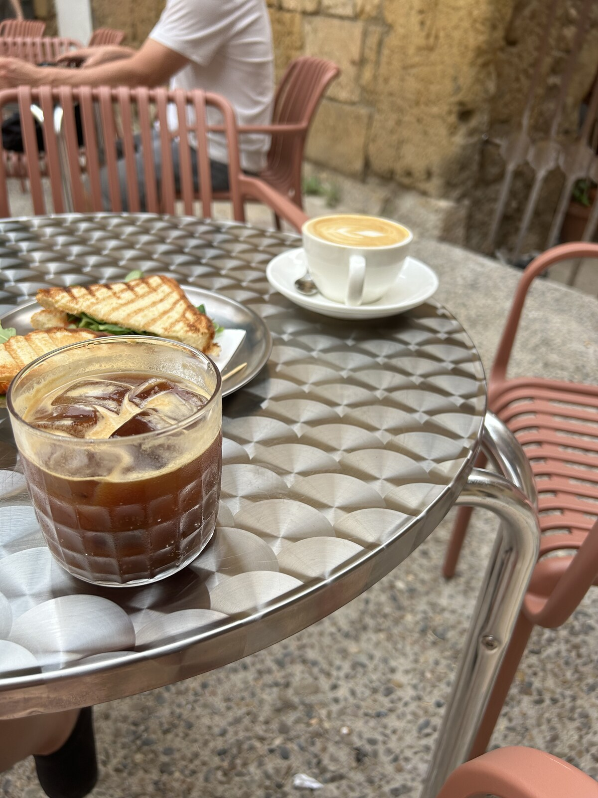
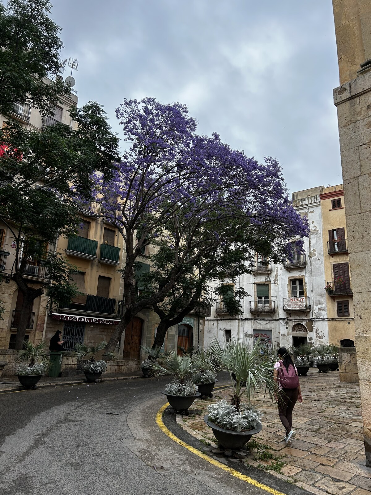
☕ Casa Quadrat
Открыть в Google КартахВідкрити в Google КартахOpen in Google Maps
Первая кофейня спешалти-кофе в Старом городе. Сыграла большую роль в развитии культуры хорошего кофе в историческом центре Таррагоны.
Перша кав’ярня спешелті-кави в Старому місті. Вона відіграла велику роль у розвитку культури доброї кави в історичному центрі Таррагони.
The first specialty coffee shop in the Old Town. It played a big role in kickstarting specialty coffee culture in Tarragona's historic center.
Особенно рекомендую напитки на молоке — используют фермерское каталонское молоко, поставляемое специально для кофеен, что прекрасно раскрывает вкус кофе.
Особливо раджу напої на молоці — тут використовують фермерське каталонське молоко, яке постачають спеціально для кав’ярень, і воно чудово розкриває смак кави.
I especially recommend the milk-based drinks — they use farm-sourced Catalan milk supplied specifically for coffee shops, which brings out the coffee's flavor beautifully.
Также стоит попробовать: фирменные сэндвичи; завтраки и бранчи; вечером — натуральные испанские вина от небольших производителей.
Також варто спробувати: фірмові сендвічі; сніданки та бранчі; увечері — натуральні іспанські вина від невеликих виробників.
Also worth trying: signature sandwiches; breakfasts and brunches; in the evening — natural Spanish wines from small producers.
☕ Odila Specialty Coffee
Открыть в Google КартахВідкрити в Google КартахOpen in Google Maps
Небольшая уютная кофейня с отличным спешалти-кофе и очень дружелюбной атмосферой. Отличное место, чтобы выпить качественный кофе, проходя по центру города.
Невелика затишна кав’ярня з чудовою спешелті-кавою та дуже привітною атмосферою. Гарне місце, щоб випити якісної кави, прогулюючись центром міста.
A small, cozy coffee shop with excellent specialty coffee and a very friendly atmosphere. A great spot for a quality coffee while passing through the city center.
☕ Nicoffee
Открыть в Google КартахВідкрити в Google КартахOpen in Google Maps
Самая новая кофейня спешалти-кофе в городе, открылась летом 2026 года.
Найновіша кав’ярня спешелті-кави в місті — відкрилася влітку 2026 року.
The newest specialty coffee shop in the city, opened in summer 2026.
Особенно рекомендую матчу и фирменные кофейные напитки. Бариста обучался и работал вместе с украинским бариста. Для меня это хороший знак качества, так как украинская кофейная культура сегодня считается одной из сильнейших в Европе.
Особливо раджу матчу та фірмові кавові напої. Бариста навчався і працював разом з українським баристою. Для мене це добрий знак якості, адже українська кавова культура сьогодні вважається однією з найсильніших у Європі.
I especially recommend the matcha and the signature coffee drinks. The barista trained and worked alongside a Ukrainian barista. To me, that's a good sign of quality, since Ukrainian coffee culture is considered one of the strongest in Europe today.
Где попробовать мороженое в ТаррагонеДе скуштувати морозиво в ТаррагоніWhere to try ice cream in Tarragona
После прогулки по Старому городу обязательно остановитесь на мороженое. В Таррагоне есть несколько отличных джелатерий, где готовят настоящее ремесленное мороженое.
Після прогулянки Старим містом обов’язково зупиніться на морозиво. У Таррагоні є кілька чудових джелатерій, де готують справжнє ремісниче морозиво.
After a walk around the Old Town, be sure to stop for ice cream. Tarragona has several excellent gelaterias making genuine artisan ice cream.
🍦 Bico de Xeado ⭐ Мой фаворитМій фаворитMy favorite
Открыть в Google КартахВідкрити в Google КартахOpen in Google Maps
Лучшая джелатерия в центре Таррагоны. Готовят ремесленное мороженое из натуральных ингредиентов, ассортимент постоянно меняется.
Найкраща джелатерія в центрі Таррагони. Тут готують ремісниче морозиво з натуральних інгредієнтів, а асортимент постійно змінюється.
The best gelateria in central Tarragona. They make artisan ice cream from natural ingredients, and the selection is constantly changing.
Обязательно попробуйте вкус Шартрёз. Шартрёз — знаменитый ликёр, который давно считается одним из символов Таррагоны. Мороженое не содержит алкоголя, но сохраняет характерный цитрусово-травяной вкус и прекрасно освежает в жаркий летний день.
Обов’язково скуштуйте смак Шартрез. Шартрез — знаменитий лікер, який здавна вважається одним із символів Таррагони. Морозиво не містить алкоголю, але зберігає характерний цитрусово-трав’яний смак і чудово освіжає в спекотний літній день.
Be sure to try the Chartreuse flavor. Chartreuse is a famous liqueur that has long been considered one of Tarragona's symbols. The ice cream contains no alcohol but keeps the characteristic citrusy, herbal flavor and is wonderfully refreshing on a hot summer day.
🍦 Karamell Helado Artesanal
Открыть в Google КартахВідкрити в Google КартахOpen in Google Maps
Небольшая ремесленная джелатерия в центре города с фирменными вкусами и натуральными ингредиентами. Отличное место, если хочется попробовать современное каталонское мороженое небольшими партиями.
Невелика ремісницька джелатерія в центрі міста з фірмовими смаками та натуральними інгредієнтами. Чудове місце, якщо хочеться скуштувати сучасне каталонське морозиво, приготоване невеликими партіями.
A small artisan gelateria in the city center with signature flavors and natural ingredients. A great spot if you want to try modern, small-batch Catalan ice cream.
🍦 GELICIOS
Открыть в Google КартахВідкрити в Google КартахOpen in Google Maps
Новая джелатерия, открывшаяся летом 2026 года на площади Plaça del Fòrum, прямо в сердце Старого города. Готовят полностью ремесленное мороженое из натуральных ингредиентов по собственным рецептам, с большим вниманием к необычным вкусам и качеству продукта.
Нова джелатерія, що відкрилася влітку 2026 року на площі Plaça del Fòrum, у самому серці Старого міста. Тут готують повністю ремісниче морозиво з натуральних інгредієнтів за власними рецептами, приділяючи велику увагу незвичним смакам і якості продукту.
A new gelateria that opened in summer 2026 on Plaça del Fòrum, right in the heart of the Old Town. They make fully artisanal ice cream from natural ingredients using their own recipes, with strong attention to unusual flavors and product quality.
🍦 Mucca da Latte
Открыть в Google КартахВідкрити в Google КартахOpen in Google Maps
Ещё одна отличная джелатерия в Старом городе. Большой выбор классического итальянского джелато, сорбетов и сезонных вкусов. Отличный выбор во время прогулки по историческому центру.
Ще одна чудова джелатерія в Старому місті. Великий вибір класичного італійського джелато, сорбетів і сезонних смаків. Чудовий варіант під час прогулянки історичним центром.
Another excellent gelateria in the Old Town. A wide selection of classic Italian gelato, sorbets, and seasonal flavors. A great choice if you're strolling through the historic center.
У сети также есть вторая точка на Rambla Nova, 8 (Google Карты).
У мережі також є друга точка на Rambla Nova, 8 (Google Карти).
The chain also has a second location on Rambla Nova, 8 (Google Maps).
🍦 Olivier
Открыть в Google КартахВідкрити в Google КартахOpen in Google Maps
Если вы окажетесь на Rambla Nova, стоит заглянуть и в Gelateria Olivier — одну из старейших и самых известных итальянских джелатерий города, работающую уже несколько десятилетий. Считается настоящей классикой Таррагоны, рецепты передаются уже в третьем поколении одной семьи.
Якщо ви опинитеся на Rambla Nova, варто зазирнути й до Gelateria Olivier — однієї з найстаріших і найвідоміших італійських джелатерій міста, яка працює вже кілька десятиліть. Її вважають справжньою класикою Таррагони, а рецепти в одній родині передаються вже третє покоління.
If you find yourself on Rambla Nova, it's worth stopping by Gelateria Olivier too — one of the oldest and most famous Italian gelaterias in the city, running for several decades. It's considered a true Tarragona classic, with recipes passed down through three generations of the same family.
Лучшие пекарни и кондитерские ТаррагоныНайкращі пекарні та кондитерські ТаррагониThe best bakeries and pastry shops in Tarragona
🥐 Cal Jan
Открыть в Google КартахВідкрити в Google КартахOpen in Google Maps
Если вы на Центральном рынке, обязательно загляните в эту небольшую пекарню из Торредембарры. Несмотря на скромный размер, Cal Jan считается одной из лучших кондитерских региона. В последние годы она получила немало наград, включая лучшую кондитерскую провинции Таррагона и лучший шоколадный панеттоне Испании.
Якщо ви на Центральному ринку, обов’язково зазирніть до цієї невеликої пекарні з Торредембарри. Попри скромний розмір, Cal Jan вважається однією з найкращих кондитерських регіону. За останні роки вона отримала чимало нагород, зокрема звання найкращої кондитерської провінції Таррагона та найкращого шоколадного панетоне Іспанії.
If you're at the Central Market, be sure to stop by this small bakery from Torredembarra. Despite its modest size, Cal Jan is considered one of the best pastry shops in the region. In recent years it has won numerous awards, including best pastry shop in the province of Tarragona and best chocolate panettone in Spain.
🥐 Panet Rambla Nova II
Открыть в Google КартахВідкрити в Google КартахOpen in Google Maps
Сеть пекарен, встречающаяся по всему городу. Отличное место для быстрого завтрака или перекуса. Если хочется попробовать что-то в каталонском стиле, закажите бокадильо — традиционный испанский сэндвич на багете. Самые популярные варианты: с хамоном; с каталонской колбасой fuet; с тортильей де пататас; с тунцом и помидором.
Мережа пекарень, які трапляються по всьому місту. Чудове місце для швидкого сніданку чи перекусу. Якщо хочеться спробувати щось у каталонському стилі, замовте бокаділью — традиційний іспанський сендвіч на багеті. Найпопулярніші варіанти: з хамоном; з каталонською ковбаскою fuet; з тортильєю де пататас; з тунцем і помідором.
A bakery chain found throughout the city. A great spot for a quick breakfast or snack. If you want to try something Catalan-style, order a bocadillo — the traditional Spanish baguette sandwich. The most popular versions: with jamón; with Catalan fuet sausage; with tortilla de patatas; with tuna and tomato.
🥐 Lanttonia Cafe & Bakery
Открыть в Google КартахВідкрити в Google КартахOpen in Google Maps
Эта пекарня находится немного в стороне от туристического центра, в жилом районе, но заглянуть туда точно стоит. Многие местные считают, что здесь одни из лучших круассанов и pain au chocolat в Таррагоне.
Ця пекарня розташована трохи осторонь від туристичного центру, у житловому районі, але зазирнути туди точно варто. Багато місцевих вважають, що тут одні з найкращих круасанів і pain au chocolat у Таррагоні.
This bakery is a bit off the tourist center, in a residential area, but it's definitely worth the small detour. Many locals consider it home to some of the best croissants and pain au chocolat in Tarragona.
Особенно рекомендую: 🥐 классический круассан; 🍫 pain au chocolat — один из лучших в городе; 🍪 домашнее печенье; 🥪 свежие сэндвичи на завтрак.
Особливо раджу: 🥐 класичний круасан; 🍫 pain au chocolat — один із найкращих у місті; 🍪 домашнє печиво; 🥪 свіжі сендвічі на сніданок.
Especially recommended: 🥐 the classic croissant; 🍫 pain au chocolat — one of the best in the city; 🍪 homemade cookies; 🥪 fresh breakfast sandwiches.
Отличное место, если хочется позавтракать в стороне от туристических улиц и увидеть, куда за выпечкой ходят сами жители Таррагоны. Здесь также хороший кофе, что делает Lanttonia идеальным местом для неспешного завтрака или позднего бранча.
Чудове місце, якщо хочеться поснідати подалі від туристичних вулиць і побачити, куди по випічку ходять самі мешканці Таррагони. Тут також добра кава, тож Lanttonia — ідеальне місце для неспішного сніданку або пізнього бранчу.
A great place if you want to have breakfast away from the tourist streets and see where Tarragona locals themselves go for their pastries. Good coffee here too, making Lanttonia perfect for a relaxed breakfast or late brunch.
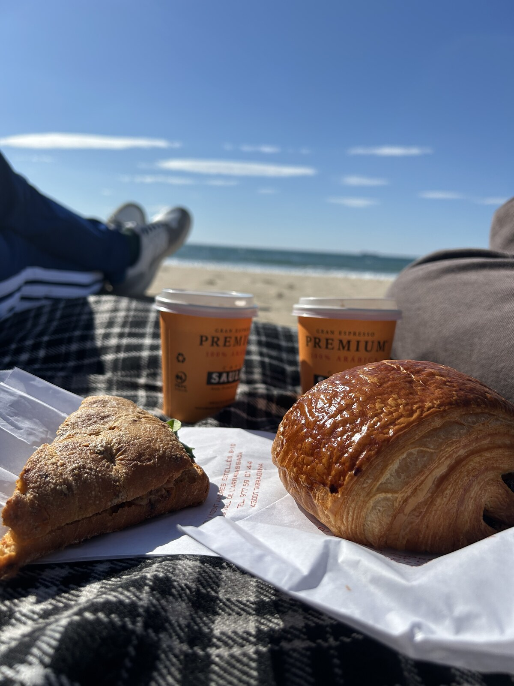
🍕 Рестораны в ТаррагонеРесторани в ТаррагоніRestaurants in Tarragona
🌮 Мексиканская кухняМексиканська кухняMexican cuisine
Frida (Google Карты) — один из лучших мексиканских ресторанов города. Отличные тако, гуакамоле и коктейли.
Frida (Google Карти) — один із найкращих мексиканських ресторанів міста. Чудові тако, гуакамоле та коктейлі.
Frida (Google Maps) — one of the best Mexican restaurants in the city. Great tacos, guacamole, and cocktails.
🥩 МясоМ’ясоMeat
Braseria La Catedral (Google Карты) — хороший выбор для стейков и мяса на гриле, рядом с собором.
Braseria La Catedral (Google Карти) — гарний вибір для стейків і м’яса на грилі, поруч із собором.
Braseria La Catedral (Google Maps) — a good choice for steaks and grilled meat, near the cathedral.
🦐 Морепродукты и паэльяМорепродукти та паельяSeafood and paella
El Posit (Эль-Серральо) (Google Карты) — одно из лучших мест для паэльи и риса с морепродуктами.
El Posit (Ель-Серральо) (Google Карти) — одне з найкращих місць для паельї та рису з морепродуктами.
El Posit (El Serrallo) (Google Maps) — one of the best places for paella and seafood rice.
L'Àncora (Google Карты) — более доступный ресторан с большим выбором свежей рыбы и морепродуктов. Хорошее соотношение цены и качества.
L'Àncora (Google Карти) — доступніший ресторан із великим вибором свіжої риби та морепродуктів. Гарне співвідношення ціни та якості.
L'Àncora (Google Maps) — a more affordable restaurant with a wide choice of fresh fish and seafood. Good value for money.
L'Arrosseria del Serrallo (Google Карты) — ресторан прямо на набережной Эль-Серральо с видом на порт, специализируется на рисовых блюдах и паэлье.
L'Arrosseria del Serrallo (Google Карти) — ресторан просто на набережній Ель-Серральо з видом на порт, що спеціалізується на стравах із рису та паельї.
L'Arrosseria del Serrallo (Google Maps) — a restaurant right on the El Serrallo waterfront with port views, specializing in rice dishes and paella.
Если увидите в меню Arroz Negro — обязательно попробуйте, ещё одно классическое блюдо этого побережья.
Якщо побачите в меню Arroz Negro — обов’язково спробуйте: це ще одна класична страва цього узбережжя.
If you see Arroz Negro on the menu, be sure to try it — another classic dish of this coast.
🍷 ГастробарГастробарGastro bar
El Cranc (Google Карты) — отличное место для тапас, вина и непринуждённого ужина.
El Cranc (Google Карти) — чудове місце для тапас, вина та невимушеної вечері.
El Cranc (Google Maps) — a great spot for tapas, wine, and a casual dinner.
⭐ Для особого случаяДля особливої нагодиFor a special occasion
El Terrat Restaurant (Google Карты) — один из лучших ресторанов Таррагоны с современной авторской кухней. Уже несколько лет подряд отмечен в гиде Мишлен.
El Terrat Restaurant (Google Карти) — один із найкращих ресторанів Таррагони із сучасною авторською кухнею. Уже кілька років поспіль відзначений у гіді Мішлен.
El Terrat Restaurant (Google Maps) — one of the best restaurants in Tarragona, with modern signature cuisine. It has been featured in the Michelin guide for several years running.
AQ (Google Карты) — ещё один очень сильный современный средиземноморский ресторан, любимый и местными, и гурманами-путешественниками.
AQ (Google Карти) — ще один дуже сильний сучасний середземноморський ресторан, який люблять і місцеві, і мандрівники-гурмани.
AQ (Google Maps) — another very strong modern Mediterranean restaurant, loved by both locals and food-focused travelers.
Taller (Google Карты) — отличный ресторан для спокойного ужина с интересной авторской кухней.
Taller (Google Карти) — чудовий ресторан для спокійної вечері з цікавою авторською кухнею.
Taller (Google Maps) — an excellent restaurant for a relaxed dinner with interesting signature cuisine.
🥘 Каталонская кухняКаталонська кухняCatalan cuisine
La Cuineta (Google Карты) — один из лучших традиционных каталонских ресторанов. Особенно хорош, если хочется попробовать местные блюда, помимо морепродуктов. Местные жители часто сами его рекомендуют.
La Cuineta (Google Карти) — один із найкращих традиційних каталонських ресторанів. Особливо гарний, якщо хочеться скуштувати місцеві страви, а не лише морепродукти. Місцеві мешканці часто самі його радять.
La Cuineta (Google Maps) — one of the best traditional Catalan restaurants. Especially good if you want to try local dishes beyond just seafood. Locals themselves often recommend it.
🍖 Астурийская кухняАстурійська кухняAsturian cuisine
El Encuentro Asturiano (Google Карты) — простое недорогое место, где можно попробовать знаменитый качопо — огромное блюдо из двух тонких котлет, фаршированных сыром и ветчиной. Порции очень большие, так что одного блюда часто хватает на двоих.
El Encuentro Asturiano (Google Карти) — просте недороге місце, де можна скуштувати знамените качопо — величезну страву з двох тонких відбивних, фаршированих сиром і шинкою. Порції дуже великі, тож однієї страви часто вистачає на двох.
El Encuentro Asturiano (Google Maps) — a simple, inexpensive spot where you can try the famous cachopo — a huge dish of two thin cutlets stuffed with cheese and ham. The portions are very large, so one dish is often enough for two.
🍣 Японская кухняЯпонська кухняJapanese cuisine
Если хочется суши, в Таррагоне есть несколько очень достойных вариантов.
Якщо хочеться суші, у Таррагоні є кілька дуже гідних варіантів.
If you're craving sushi, Tarragona has a few very solid options.
K10 Sushi (Google Карты) — один из самых популярных японских ресторанов города. Находится в стороне от центра, в промышленной зоне Франколи, но многие специально едут туда. Большой ресторан в формате буфета «по меню», хороший выбор суши, сашими, роллов и горячих блюд.
K10 Sushi (Google Карти) — один із найпопулярніших японських ресторанів міста. Розташований осторонь від центру, у промисловій зоні Франколі, але багато хто їде туди спеціально. Великий ресторан у форматі буфету «за меню», гарний вибір суші, сашимі, ролів і гарячих страв.
K10 Sushi (Google Maps) — one of the most popular Japanese restaurants in the city. Located outside the center, in the Francolí industrial area, but many people make a special trip here. A large restaurant with an à la carte buffet format, a good selection of sushi, sashimi, rolls, and hot dishes.
Oita Sushi (Google Карты) — современный японский ресторан рядом с центром (проспект Prat de la Riba). Тоже работает в формате буфета по меню. Большой выбор суши, нигири, сашими, рамена и горячих блюд, приятный интерьер и хорошее соотношение цены и качества.
Oita Sushi (Google Карти) — сучасний японський ресторан поруч із центром (проспект Prat de la Riba). Теж працює у форматі буфету за меню. Великий вибір суші, нігірі, сашимі, рамену та гарячих страв, приємний інтер’єр і гарне співвідношення ціни та якості.
Oita Sushi (Google Maps) — a modern Japanese restaurant close to the center (Avinguda Prat de la Riba). Also works in an à la carte buffet format. A wide selection of sushi, nigiri, sashimi, ramen, and hot dishes, a nice interior, and good value for money.
🍕 Итальянская кухня и пиццаІталійська кухня та піцаItalian cuisine and pizza
Sul Mare La Pizzeria (Google Карты) — отличный выбор для ужина с красивым видом. Расположен прямо у марины, с террасой с видом на яхты и порт. Готовят настоящую неаполитанскую пиццу в дровяной печи, используя итальянскую муку, томаты San Marzano DOP и долгую ферментацию теста. Отличное место для ужина на закате.
Sul Mare La Pizzeria (Google Карти) — чудовий вибір для вечері з гарним краєвидом. Піцерія розташована просто біля марини, а з її тераси видно яхти й порт. Тут печуть справжню неаполітанську піцу в дров’яній печі з італійського борошна, томатів San Marzano DOP і на тісті довгої ферментації. Чудове місце, щоб повечеряти на заході сонця.
Sul Mare La Pizzeria (Google Maps) — a great choice if you want dinner with a beautiful view. Located right at the marina, with a terrace overlooking the yachts and the port. They make genuine Neapolitan pizza in a wood-fired oven, using Italian flour, San Marzano DOP tomatoes, and long-fermented dough. A great spot for a sunset dinner.
DODITALY Focacceria Italiana (Google Карты) — небольшое итальянское кафе в Старом городе, специализирующееся на фокачче. Идеально для быстрого обеда или перекуса во время прогулки. В меню — свежая фокачча, итальянские сыры, колбасы и классические итальянские продукты.
DODITALY Focacceria Italiana (Google Карти) — невелике італійське кафе в Старому місті, що спеціалізується на фокачі. Ідеально для швидкого обіду чи перекусу під час прогулянки. У меню — свіжа фокача, італійські сири, ковбаси та класичні італійські продукти.
DODITALY Focacceria Italiana (Google Maps) — a small Italian café in the Old Town specializing in focaccia. Perfect for a quick lunch or a snack during a walk. The menu includes fresh focaccia, Italian cheeses, cured meats, and classic Italian products.
Pizzeria Tarricone (Google Карты) — одна из лучших пиццерий Таррагоны. Готовят классическую дровяную неаполитанскую пиццу, ресторан регулярно получает очень высокие оценки как от местных, так и от туристов. Отличный выбор, если главная цель — вкусная пицца.
Pizzeria Tarricone (Google Карти) — одна з найкращих піцерій Таррагони. Тут готують класичну неаполітанську піцу на дровах, і заклад незмінно отримує дуже високі оцінки як від місцевих, так і від туристів. Чудовий вибір, якщо головна мета — смачна піца.
Pizzeria Tarricone (Google Maps) — one of the best pizzerias in Tarragona. They make classic wood-fired Neapolitan pizza, and the restaurant regularly gets very high ratings from both locals and tourists. A great choice if delicious pizza is your main goal.
🛍️ Шопинг и сувениры🛍️ Шопінг і сувеніри🛍️ Shopping and souvenirs
Магазины и сувенирные лавкиМагазини та сувенірні крамниціShops and souvenir stores
Если хочется привезти из Таррагоны что-то, кроме магнитов, отправляйтесь в Старый город. Главная туристическая улица, ведущая к собору — Carrer Major. Именно здесь сосредоточено большинство интересных магазинов с местными товарами.
Якщо хочеться привезти з Таррагони щось, окрім магнітиків, вирушайте до Старого міста. Головна туристична вулиця, що веде до собору, — Carrer Major. Саме тут зосереджена більшість цікавих магазинів із місцевими товарами.
If you want to bring back something from Tarragona besides magnets, head to the Old Town. The main tourist street leading to the cathedral is Carrer Major. Most of the interesting shops selling local goods are concentrated here.
👜 Corium Tarragona
Открыть в Google КартахВідкрити в Google КартахOpen in Google Maps
Если хочется привезти из Таррагоны красивый и практичный подарок, загляните в Corium на Carrer Major, по пути к собору. Это один из лучших магазинов города с изделиями из натуральной кожи.
Якщо хочеться привезти з Таррагони гарний і практичний подарунок, зазирніть до Corium на Carrer Major, дорогою до собору. Це один із найкращих магазинів міста з виробами з натуральної шкіри.
If you want to bring back a beautiful and practical gift from Tarragona, stop by Corium on Carrer Major, on the way to the cathedral. It's one of the best shops in the city for genuine leather goods.
Здесь можно найти: кожаные сумки; рюкзаки; кошельки; ремни; дорожные аксессуары; небольшие кожаные подарки.
Тут можна знайти: шкіряні сумки; рюкзаки; гаманці; ремені; дорожні аксесуари; невеликі шкіряні подарунки.
Here you can find: leather bags; backpacks; wallets; belts; travel accessories; small leather gifts.
Специализация магазина — качественные изделия из натуральной кожи классического дизайна. Некоторые вещи можно бесплатно персонализировать (инициалами или именем), что делает это отличным вариантом для памятного подарка или сувенира из поездки.
Магазин спеціалізується на якісних виробах із натуральної шкіри класичного дизайну. Деякі речі можна безкоштовно персоналізувати (ініціалами або ім’ям), тож це чудовий варіант для пам’ятного подарунка чи сувеніра з подорожі.
The shop's specialty is quality genuine-leather goods with a classic design. Some items can be personalized for free (with initials or a name), making it a great option for a memorable gift or a souvenir from the trip.
🎁 La Botiga del Bon Gust
Открыть в Google КартахВідкрити в Google КартахOpen in Google Maps
Если ищете необычные подарки из Каталонии, обязательно загляните в La Botiga del Bon Gust на Carrer Major. Это один из самых интересных магазинов Старого города с аутентичными каталонскими товарами.
Якщо шукаєте незвичайні подарунки з Каталонії, неодмінно зазирніть до La Botiga del Bon Gust на Carrer Major. Це один із найцікавіших магазинів Старого міста з автентичними каталонськими товарами.
If you're after unusual gifts from Catalonia, be sure to check out La Botiga del Bon Gust on Carrer Major. It's one of the most interesting shops in the Old Town, with authentic Catalan goods.
Стоит обратить внимание на: 🏺 расписную каталонскую керамику ручной работы; 🍷 местные ликёры, включая Шартрёз и другие региональные напитки; 🧴 натуральную косметику и мыло; 🫒 гастрономические сувениры; 🎁 небольшие подарки от местных мастеров.
Варто звернути увагу на: 🏺 розписну каталонську кераміку ручної роботи; 🍷 місцеві лікери, зокрема Шартрез та інші регіональні напої; 🧴 натуральну косметику й мило; 🫒 гастрономічні сувеніри; 🎁 невеликі подарунки від місцевих майстрів.
Worth checking out here: 🏺 hand-painted Catalan ceramics; 🍷 local liqueurs, including Chartreuse and other regional drinks; 🧴 natural cosmetics and soap; 🫒 gourmet food souvenirs; 🎁 small gifts and items by local artisans.
🍫 Torrons Artesans Vicens
Открыть в Google КартахВідкрити в Google КартахOpen in Google Maps
Torrons Artesans Vicens — один из самых известных производителей туррона в Испании, история которого началась ещё в 1775 году. Бренд родом из города Аграмунт (Каталония), считающегося одной из столиц производства туррона.
Torrons Artesans Vicens — один із найвідоміших виробників туррону в Іспанії, історія якого почалася ще 1775 року. Бренд походить із містечка Аграмунт (Каталонія), яке вважають однією зі столиць виробництва туррону.
Torrons Artesans Vicens is one of the most famous turrón makers in Spain, with a history dating back to 1775. The brand comes from the town of Agramunt (Catalonia), considered one of the capitals of turrón production.
Отличное место, чтобы привезти вкусный подарок из Испании. Помимо классического туррона, здесь продают шоколад, миндальные сладости и современные авторские коллекции, созданные вместе с известными испанскими шеф-поварами.
Чудове місце, щоб привезти смачний подарунок з Іспанії. Окрім класичного туррону, тут продають шоколад, мигдальні солодощі та сучасні авторські колекції, створені разом з відомими іспанськими шеф-кухарями.
It's a great place to bring back a tasty gift from Spain. Besides classic turróns, they also sell chocolate, almond sweets, and modern signature collections created together with famous Spanish chefs.
Стоит купить: 🌰 классический мягкий Turrón de Jijona; 🥜 хрустящий Turrón de Alicante; 🍫 шоколадный туррон; 🌟 авторские вкусы от известных шефов (например, Жорди Рока или Кике Дакоста); 🎁 красивые подарочные наборы.
Варто купити: 🌰 класичний м’який Turrón de Jijona; 🥜 хрусткий Turrón de Alicante; 🍫 шоколадний туррон; 🌟 авторські смаки від відомих шефів (наприклад, Жорді Роки чи Кіке Дакости); 🎁 гарні подарункові набори.
Worth buying: 🌰 the classic soft Turrón de Jijona; 🥜 crunchy Turrón de Alicante; 🍫 chocolate turróns; 🌟 signature flavors from famous chefs (such as Jordi Roca or Quique Dacosta); 🎁 beautiful gift sets.
🥑 Ametller Origen
Открыть в Google КартахВідкрити в Google КартахOpen in Google Maps
Каталонская сеть гастрономических супермаркетов, которая работает напрямую с собственными фермами и местными производителями. Отличное место, если хочется купить по-настоящему свежие качественные продукты, а не обычный набор супермаркета.
Каталонська мережа гастрономічних супермаркетів, яка працює безпосередньо з власними фермами та місцевими виробниками. Чудове місце, якщо хочеться купити по-справжньому свіжі якісні продукти, а не звичайний супермаркетний набір.
A Catalan chain of gourmet supermarkets that works directly with its own farms and local producers. A great place if you want to buy truly fresh, quality products rather than a typical supermarket selection.
Здесь можно найти: 🍅 свежие фрукты и овощи, часто со своих полей; 🍱 готовые блюда — от салатов до горячих гарниров; 🥖 собственную выпечку и хлеб; 🧀 сыры, хамон и другие местные деликатесы; 🍷 вино и каву от небольших производителей; 🌿 органические продукты.
Тут можна знайти: 🍅 свіжі фрукти й овочі, часто з власних полів; 🍱 готові страви — від салатів до гарячих гарнірів; 🥖 власну випічку та хліб; 🧀 сири, хамон та інші місцеві делікатеси; 🍷 вино й каву від невеликих виробників; 🌿 органічні продукти.
Here you can find: 🍅 fresh fruit and vegetables, often from their own fields; 🍱 ready-to-eat meals — from salads to hot side dishes; 🥖 their own baked goods and bread; 🧀 cheeses, jamón, and other local delicacies; 🍷 wine and cava from small producers; 🌿 organic products.
🛍️ Parc Central
Открыть в Google КартахВідкрити в Google КартахOpen in Google Maps
Parc Central — главный торговый центр Таррагоны. Самое удобное место, если хочется совместить прогулку по городу с шопингом.
Parc Central — головний торговельний центр Таррагони. Найзручніше місце, якщо хочеться поєднати прогулянку містом із шопінгом.
Parc Central is Tarragona's main shopping mall. The most convenient place if you want to combine a walk around the city with some shopping.
Здесь представлены почти все популярные испанские и международные бренды: 👗 Inditex: Zara, Zara Home, Massimo Dutti, Stradivarius, Bershka, Oysho, Pull&Bear; 🛍️ Mango; 👕 H&M; 👙 Women'secret; 🧦 Calzedonia; 🤍 Intimissimi; 💄 Primor и Druni — два самых популярных магазина косметики и парфюмерии в Испании.
Тут представлені майже всі популярні іспанські та міжнародні бренди: 👗 Inditex: Zara, Zara Home, Massimo Dutti, Stradivarius, Bershka, Oysho, Pull&Bear; 🛍️ Mango; 👕 H&M; 👙 Women'secret; 🧦 Calzedonia; 🤍 Intimissimi; 💄 Primor і Druni — дві найпопулярніші мережі косметики та парфумерії в Іспанії.
Almost all the popular Spanish and international brands are represented here: 👗 Inditex: Zara, Zara Home, Massimo Dutti, Stradivarius, Bershka, Oysho, Pull&Bear; 🛍️ Mango; 👕 H&M; 👙 Women'secret; 🧦 Calzedonia; 🤍 Intimissimi; 💄 Primor and Druni — two of the most popular cosmetics and perfume stores in Spain.
⚽ Для любителей спортаДля любителів спортуFor sports fans
В торговом центре есть официальный магазин ФК Барселона, где можно купить официальную атрибутику и сувениры, а также нанести имя и номер на футболку.
У торговельному центрі є офіційний магазин ФК «Барселона», де можна придбати офіційну атрибутику й сувеніри, а також нанести ім’я та номер на футболку.
The mall has an official FC Barcelona store, where you can buy official gear and souvenirs and have a name and number printed on a shirt.
🛍️ El Corte Inglés
Открыть в Google КартахВідкрити в Google КартахOpen in Google Maps
Что касается одежды, El Corte Inglés — классический испанский универмаг с широким выбором брендов среднего ценового сегмента. Но даже если шопинг вас не интересует, стоит зайти хотя бы ради продуктового отдела.
Що стосується одягу, El Corte Inglés — класичний іспанський універмаг із широким вибором брендів середнього цінового сегмента. Але навіть якщо шопінг вас не цікавить, варто зайти бодай заради продуктового відділу.
When it comes to clothing, El Corte Inglés is the classic Spanish department store, with a wide range of mid-priced brands. But even if shopping isn't your thing, it's worth visiting for the food hall alone.
На первом этаже находится супермаркет и гастрономический отдел Gourmet — одна из лучших коллекций продуктов в Таррагоне. Здесь можно купить: оливковое масло премиальных производителей; выдержанный бальзамический уксус; качественные испанские консервы; вина и каву; сыры, хамон и другие гастрономические сувениры.
На першому поверсі розташовані супермаркет і гастрономічний відділ Gourmet — одна з найкращих колекцій продуктів у Таррагоні. Тут можна купити: оливкову олію від преміальних виробників; витриманий бальзамічний оцет; якісні іспанські консерви; вина й каву; сири, хамон та інші гастрономічні сувеніри.
On the ground floor there's a supermarket and a Gourmet department, home to one of the best product collections in Tarragona. Here you can buy: premium producer olive oils; aged balsamic vinegars; high-quality Spanish canned goods; wines and cava; cheeses, jamón, and other gourmet souvenirs.
Если хочется привезти домой что-то вкусное, это одно из лучших мест в городе.
Якщо хочеться привезти додому щось смачне, це одне з найкращих місць у місті.
If you want to bring home something delicious, this is one of the best places in the city.
🍞 Хлеб из НулесаХліб із НулесаBread from Nules
В El Corte Inglés также продаётся хлеб небольшой пекарни Forn de Pa Nules (из города Нулес). Многие местные приходят специально за ним. Хлеб быстро раскупается, поэтому некоторые даже делают предзаказ.
В El Corte Inglés також продають хліб невеликої пекарні Forn de Pa Nules (з містечка Нулес). Багато місцевих приходять спеціально по нього. Хліб швидко розкуповують, тому дехто навіть робить передзамовлення.
El Corte Inglés also sells bread from a small bakery called Forn de Pa Nules (from the town of Nules). Many locals come here specifically for it. The bread sells out quickly, so some people even place advance orders.
Помимо классических видов хлеба, часто появляются сезонные новинки: хлеб с кальсотс; панеттоне с кальсотс; хлеб с тёмным шоколадом; разные коки с грибами, овощами и другими сезонными начинками.
Окрім класичних видів хліба, часто з’являються сезонні новинки: хліб із кальсотс; панетоне з кальсотс; хліб із чорним шоколадом; різні коки з грибами, овочами та іншими сезонними начинками.
Besides the classic bread varieties, seasonal specials often appear: calçots bread; calçots panettone; dark chocolate bread; various cocas with mushrooms, vegetables, and other seasonal toppings.
💰 Цены и Tax FreeЦіни та Tax FreePrices and Tax Free
Испания считается одной из лучших стран по соотношению цены и качества для покупки одежды брендов Inditex. Многие вещи здесь дешевле, чем в большинстве других европейских стран.
Іспанію вважають однією з найкращих країн за співвідношенням ціни та якості для купівлі одягу брендів Inditex. Багато речей тут дешевші, ніж у більшості інших європейських країн.
Spain is considered one of the best-value countries for buying Inditex-brand clothing. Many items here are cheaper than in most other European countries.
Если вы живёте за пределами Евросоюза, можно оформить Tax Free при покупке и вернуть часть НДС. В Таррагоне оформить это можно в магазинах-участниках программы, а также удобно получить помощь с оформлением и возвратом в El Corte Inglés (Google Карты).
Якщо ви живете за межами Євросоюзу, під час покупки можна оформити Tax Free і повернути частину ПДВ. У Таррагоні це можна зробити в магазинах — учасниках програми, а з оформленням і поверненням зручно допоможуть в El Corte Inglés (Google Карти).
If you live outside the European Union, you can arrange Tax Free at the time of purchase and get part of the VAT back. In Tarragona, you can do the paperwork at shops participating in the program, and it's also convenient to get help with the paperwork and refund at El Corte Inglés (Google Maps).
Что привезти в подарокЩо привезти на подарунокWhat to bring back as a gift
Если хочется привезти домой не просто обычный магнит на холодильник, а маленький кусочек Каталонии — обратите внимание на местные гастрономические продукты.
Якщо хочеться привезти додому не просто звичайний магніт на холодильник, а маленький шматочок Каталонії, — зверніть увагу на місцеві гастрономічні продукти.
If you'd like to take home something more than an ordinary fridge magnet — a little piece of Catalonia — look to the local gourmet products.
🫒 Оливковое маслоОливкова оліяOlive oil
Таррагона находится рядом с регионом Siurana DOP, одним из самых известных регионов производства оливкового масла в Испании. Масло отсюда обладает насыщенным фруктовым вкусом с лёгкой остринкой и считается одним из лучших в стране.
Таррагона розташована поруч із регіоном Siurana DOP — одним із найвідоміших регіонів виробництва оливкової олії в Іспанії. Тутешня олія має насичений фруктовий смак із легкою гостринкою і вважається однією з найкращих у країні.
Tarragona is close to the Siurana DOP region, one of the best-known olive-oil-producing areas in Spain. Oil from here has a rich, fruity flavor with light spice and is considered among the best in the country.
🥩 Jamón Ibérico
Один из главных гастрономических символов Испании. В подарок удобно покупать хамон уже нарезанным и упакованным в вакуум — так его легко везти.
Один із головних гастрономічних символів Іспанії. На подарунок зручно купувати хамон уже нарізаним і в вакуумній упаковці — так його легко везти.
One of the main gastronomic symbols of Spain. For a gift, it's convenient to buy jamón already sliced and vacuum-packed — it travels easily.
🍾 Cava
Каталония — родина кавы, знаменитого испанского игристого вина. Регион Пенедес, недалеко от Таррагоны, производит большую часть лучших кав страны.
Каталонія — батьківщина кави, знаменитого іспанського ігристого вина. Регіон Пенедес неподалік від Таррагони виробляє більшість найкращих кав країни.
Catalonia is the birthplace of cava, Spain's famous sparkling wine. The Penedès region, not far from Tarragona, produces most of the country's best cavas.
Кава — отличный подарок и часто заметно дешевле сопоставимых игристых вин в других странах.
Кава — чудовий подарунок, і часто помітно дешевша за порівнянні ігристі вина в інших країнах.
Cava makes a great gift and is often noticeably cheaper than comparable sparkling wines in other countries.
🥜 ОрехиГоріхиNuts
Испания славится своими орехами, особенно миндалём. Обратите внимание на миндаль Marcona, который считается одним из лучших в мире за сладкий вкус и нежную текстуру.
Іспанія славиться своїми горіхами, особливо мигдалем. Зверніть увагу на мигдаль Marcona, який вважають одним із найкращих у світі завдяки солодкому смаку й ніжній текстурі.
Spain is famous for its nuts, especially almonds. Look out for Marcona almonds, considered among the best in the world for their sweet flavor and tender texture.
🍑 Джемы и мармеладыДжеми та мармеладиJams and marmalades
В Каталонии готовят отличные джемы из местных фруктов. Особенно рекомендую: персиковый; абрикосовый; апельсиновый.
У Каталонії роблять чудові джеми з місцевих фруктів. Особливо рекомендую: персиковий; абрикосовий; апельсиновий.
Catalonia has excellent jams made from local fruit. I especially recommend: peach; apricot; orange.
Также стоит попробовать традиционный membrillo — плотную айвовую пасту, обычно подаваемую с сыром.
Також варто скуштувати традиційний membrillo — щільну айвову пасту, яку зазвичай подають до сиру.
Also worth trying is traditional membrillo — a dense quince paste usually served with cheese.
🧀 Испанские сырыІспанські сириSpanish cheeses
Если есть возможность везти продукты в сумке-холодильнике, купите выдержанный манчего или один из местных каталонских сыров. Они прекрасно сочетаются с айвовой пастой и бокалом кавы.
Якщо є змога везти продукти в сумці-холодильнику, купіть витриманий манчего або один із місцевих каталонських сирів. Вони чудово смакують з айвовою пастою та келихом кави.
If you can carry products in a cooler bag, buy an aged Manchego or one of the local Catalan cheeses. They pair beautifully with membrillo and a glass of cava.
🍫 Turrón
Один из самых известных испанских сладких сувениров. Классический миндальный туррон продаётся круглый год, а в Torrons Vicens (Google Карты) можно найти как традиционные, так и современные авторские вкусы.
Один із найвідоміших іспанських солодких сувенірів. Класичний мигдальний туррон продають цілий рік, а в Torrons Vicens (Google Карти) можна знайти як традиційні, так і сучасні авторські смаки.
One of the best-known Spanish sweet souvenirs. Classic almond turrón is sold year-round, and at Torrons Vicens (Google Maps) you can find both traditional and modern signature flavors.
🐟 Рыбные консервыРибні консервиCanned fish
Испания известна не только свежими морепродуктами, но и одними из лучших рыбных консервов в мире. Отличный сувенир: долго хранится, легко перевозится и отличается высоким качеством.
Іспанія відома не лише свіжими морепродуктами, а й одними з найкращих рибних консервів у світі. Чудовий сувенір: довго зберігається, його легко перевозити, і він вирізняється високою якістю.
Spain is known not only for fresh seafood but also for some of the best canned fish in the world. It's a great souvenir: it keeps for a long time, travels easily, and is high quality.
Обратите внимание на: 🐟 анчоусы из Кантабрии (Anchoas del Cantábrico) — считаются лучшими в Испании за насыщенный вкус и нежную текстуру; 🐠 сардины в оливковом масле; 🦑 кальмары и каракатицу в собственном соусе или чернилах; 🐙 осьминога; 🦪 мидии в маринаде (Mejillones en escabeche) — один из самых популярных испанских консервированных продуктов; 🐚 морские моллюски (Berberechos) — небольшие моллюски, считающиеся настоящим деликатесом.
Зверніть увагу на: 🐟 анчоуси з Кантабрії (Anchoas del Cantábrico) — їх вважають найкращими в Іспанії завдяки насиченому смаку й ніжній текстурі; 🐠 сардини в оливковій олії; 🦑 кальмари й каракатицю у власному соусі або в чорнилі; 🐙 восьминога; 🦪 мідії в маринаді (Mejillones en escabeche) — один із найпопулярніших іспанських консервованих продуктів; 🐚 морські молюски (Berberechos) — невеликі молюски, які вважають справжнім делікатесом.
Look out for: 🐟 anchovies from Cantabria (Anchoas del Cantábrico) — considered the best in Spain for their rich flavor and tender texture; 🐠 sardines in olive oil; 🦑 squid and cuttlefish in their own sauce or ink; 🐙 octopus; 🦪 mussels in escabeche (Mejillones en escabeche) — one of the most popular Spanish canned products; 🐚 cockles (Berberechos) — small shellfish considered a true delicacy.